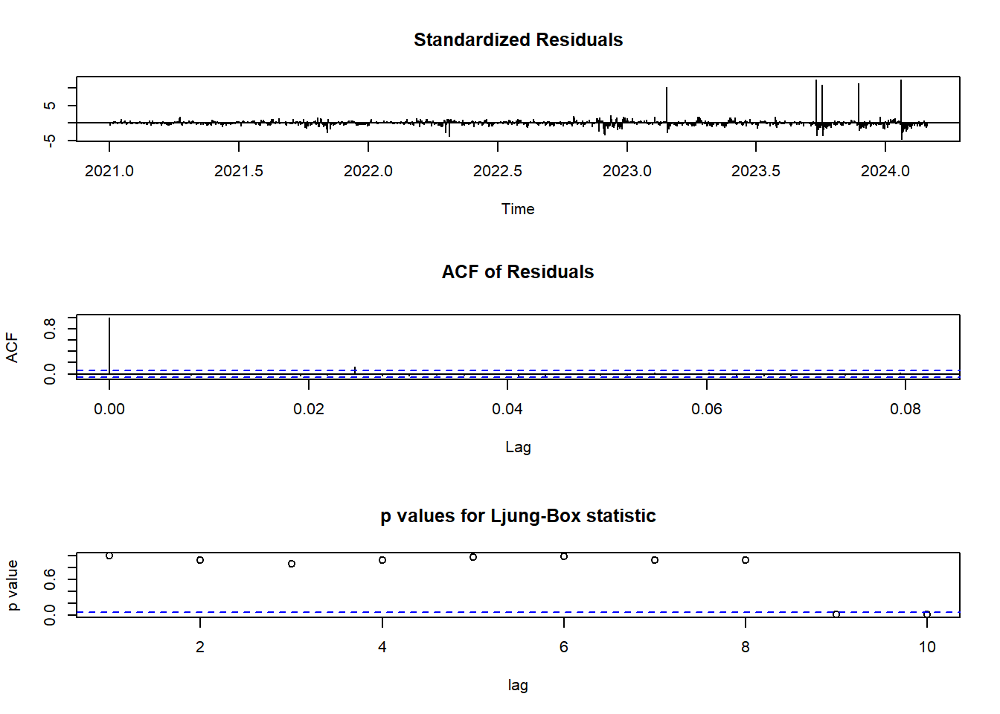
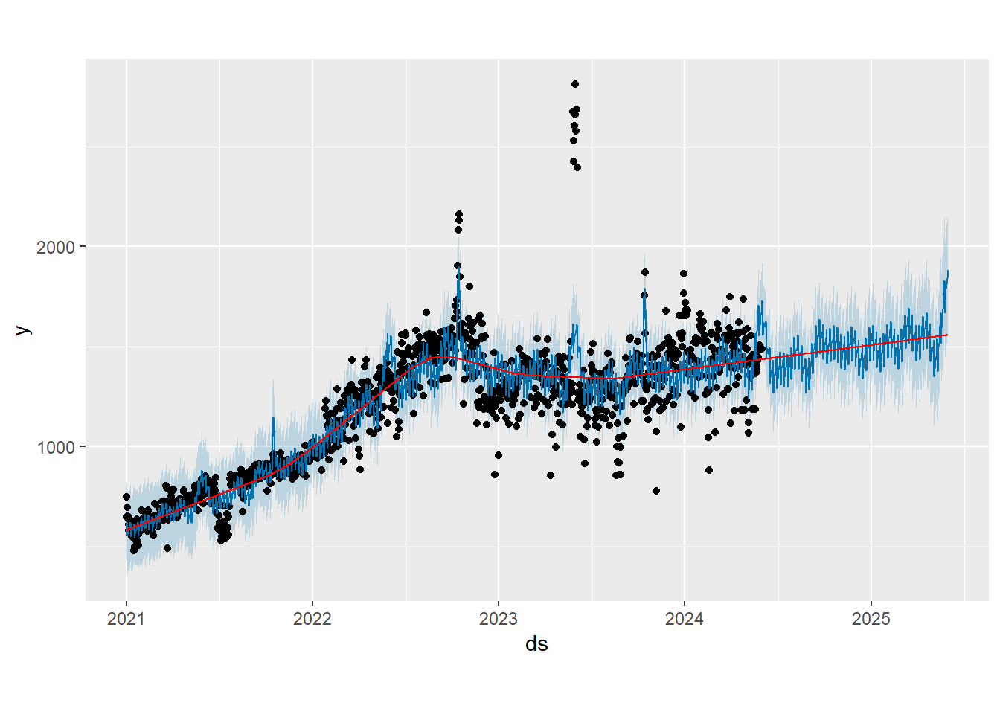
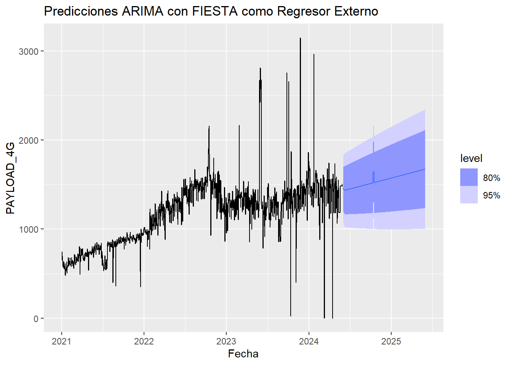

Capítulo 5 Análisis de Estacionariedad
5.1 Carga de Serie
Importamos la serie de tiempo del tráfico LTE y verificamos su rango de fechas
## x
## 1 393.57
## 2 314.84
## 3 341.93
## 4 375.91
## 5 368.37fecha_inicio <- as.Date("2021-01-01")
serie_tiempo <- ts(datos$x, start = c(format(fecha_inicio, "%Y"), format(fecha_inicio, "%j")), frequency = 365)Verificamos la fecha inicio y fecha fin
start_time <- start(serie_tiempo)
end_time <- end(serie_tiempo)
frequency <- frequency(serie_tiempo)
min_date <- as.Date(paste(start_time[1], start_time[2], sep="-"), "%Y-%j")
max_date <- as.Date(paste(end_time[1], (end_time[2]-1) / frequency * 365, sep="-"), "%Y-%j")
min_date## [1] "2021-01-01"## [1] "2024-02-28"5.2 Análisis
Dentro la imagen podemos observar lo siguiente
Observed:: Nos muestra la serie original , es decir la serie de tráfico LTE sin modificaciones.
Tred: En la tendencia nos muestra la eliminacion del ruido y estacionarie sin embargo se observan los picos de tráfico al final.
Seasonal:: En la Estacionariedad podemos observar un patrón claro y repetitivo , lo cual indica que existe estacionariedad en los datos del tráfico en esta de serie de tiempo.
Random: Este gráfico muestra residuales o fluctuaciones que nos se pueden explicar , ya que puede ser atípicos o ruido, para estos casos particulares en tráfico hay que hacer investigaciones de las causas de estas anomalias.

5.3 Diferenciacion y Logaritmos
Para poder realizar un ARIMA es importante tener estacionariedad , por eso debemos convertirlo en estacionaria por medio de una transformación de logaritmos o diferencias
5.3.1 Logaritmos
La función logaritmica es una función continua deja los mínimos y máximos bajo logaritmo, estabilizando la varianza .
Para el caso de logaritmos usamos la función “log”
Al ver la gráfica no podemos apreciar estacionariedad ya que se ven caidas y bajadas y su media es diferente de cero.
Verificamos si es estacionaria por medio de la prueba de “Dickey-Fuller” con la libreria “adf”
##
## Augmented Dickey-Fuller Test
##
## data: serielog
## Dickey-Fuller = -2.6979, Lag order = 10, p-value = 0.2829
## alternative hypothesis: stationaryEl resultado de es p-value = 0.2829 al ser mayor a 0.05 se puede determinar que es una serie no estacionaria
Con logaritmo no logramos conseguir Estacionariedad
5.3.2 Diferencias
Antes de realizar las diferencias podemos ejecutar el comando “ndiffs” para saber cuantas diferencias necesitamos
## [1] 1El resultado es “1” diferencia para convertir la serie en estacionaria
seriedif=diff(serie_tiempo)
plot(seriedif,lty="dashed",col="red",main="Serie de Tiempo de Tráfico LTE")Al ver la gráfica podemos apreciar que los datos estan alrededor de la misma media , en este caso de “cero”
Para verificar si es estacionaria lo hacemos por medio de la prueba de “Dickey-Fuller” con la libreria “adf”
## Warning in adf.test(seriedif, alternative = "stationary"): p-value smaller than
## printed p-value##
## Augmented Dickey-Fuller Test
##
## data: seriedif
## Dickey-Fuller = -14.6, Lag order = 10, p-value = 0.01
## alternative hypothesis: stationaryEl resultado de es p-value = 0.01 al ser menor a 0.05 se puede determinar que es una serie que si es estacionaria
Podemos validar si necesitamos mas diferenciaciones con el comando “ndiffs”
## [1] 0El resultado es cero por lo cuál no necesitamos más diferenciaciones
Análisis de autocorrelación
par(mfrow=c(2,2),mar=c(4,4,4,1)+.1)
plot(serie_tiempo,ylab="Tráfico LTE")
Acf(serie_tiempo,main="Serie No Estacionaria")
plot(seriedif)
acf(seriedif,main="Serie Estacionaria")Podemos observar que el primer gráfico ” no es estacionario” tiene una tendencia , la cual es verificada por la autocorrelación de la derecha . el cual supera el umbral de líneas azules (+/-)1.96
En los gráficos inferiores se puede ver una media constante , varianza constante, y se puede ver en la gráfica de la derecha la comprobación de autocorrelacion donde se visualiza que no supera el umbral de (+/-)1.96
5.4 Método de Holt Winters
Para hacer prediciones utilizando datos con tendencia y estacionalidad, recurrimos al método estacional de Holt-Winters . Este método se puede implementar con una estructura “Aditiva” o una estrucutra “multiplicativa”
El modelo aditivo se utliza mejor cuando la tendencia estacional es la misma magnitud en todo el conjunto de datos, mientras que el modelo multiplicativo cuando la magnitud de la estacionalidad cambia a medida que aumenta o disminuye el tiempo el tiempo

Al ver la gráfica al tener una periocidad diaria no es claro si usar el modelo aditivo o multiplicativo por lo cual evaluamos la homocedasticidad de los residuos .
## [1] 365Modelo Aditivo

Modelo Multiplicativo
# Descomposición Multiplicativa
modelo_multiplicativo <- decompose(serie_tiempo, type="multiplicative")
plot(modelo_multiplicativo)Al revisar los dos modelos en la parte de residuos podemos ver que el multiplicativo es mas viable ya que parecen mas aleatorios y con menos patrones sistematicos que el modelo aditivo
Para volver a verificar vamos a usa la descomposición STL (Seasonal and Trend decomposition using Loess) y un modelo ETS(Error, Trend , Seasonality )

En la gráfica la linea negra representa los datos observados , la linea azul y las bandas al final representan los pronosticos y sus intervalos de confianza , la predicion muestra picos y cambios abruptos lo que sugiere una variabilidad de los datos lo que podria estar relacionado con el nivel dela serie . El modelo utilizado es una ETS(M,N,N) (Multiplicativo ,Sin Tendencia(N), Sin estacionalidad (N) ) , esto indica que el modelo asume qu los errores se multiplican por el nivel de la serie para mejorar la variabilidad de los datos
Aplicamos el metodo Holt Winteres especificando el un modelo multiplicativo

La linea represnta los datos orginales de la serie de tiempo, la linea roja indica la serie ajustada obtenida desde el metodo de Holt-Winters , el cual se puede ver como se suaviza las fluctuaciones ,el modelo se centra enla tendencia general y los patrones de estaciones regulares
** Lectura de Alpha, Beta y Gama**
alpha <- hw$alpha
beta <- hw$beta
gamma <- hw$gamma
# Imprimir los parámetros
cat("Alpha (nivel):", alpha, "\n")## Alpha (nivel): 0.2195587## Beta (tendencia): 0## Gamma (estacionalidad): 0.5320815Alpha: va tomar valores pasados Beta como da cero no existe tendencia Gama al estar cercano a 0.5 representa estacionalidad
Componentes de modelo
## Time-Series [1:790, 1:4] from 2022 to 2024: 363 359 418 496 562 ...
## - attr(*, "dimnames")=List of 2
## ..$ : NULL
## ..$ : chr [1:4] "xhat" "level" "trend" "season"
## NULLComponente de Nivel
Este grafico se ajusta para ver la tendencia general excluyendo la estacionalidad y los valores irregurales

Al ver la gráfica podemos ver que empiza en 600 pero sigue creciendo hasta 1800 , lo que demuestra una tendencia creciente. Tambien se denotan variaciones y periodos donde tiene incrementos y descensos temporales , por ejemplo para finales de 2023 e inicios de 2024 se observa una voltatilidad , estos cambios son importantes investigarlos ya pueden ser factores externos
Componente de tendencia
Este componenen nos indica como evoluciona la serie temporal sin tomar las variaciones estacionales

La linea horizaontal nos muestra que la tendencia es constante a lo largo del tiempo , no se observan cambios ,esto indicaria que los cambios vistos en los Compenentes de nivel son estacionales o irregulares, no tendenciales.
Componente de estacionalidad
Este componente nos muestras las variaciones periódicas que ocurren en los intervalos regulares

El gráfico muestra cambios claros a lo largo del tiempo , evidenciando patrones estacionales. La amplitud de los cambios oscilan entre 0.6 y 1.4 , la subidas y bajadas reflejan periodicos especificos del año donde se espera que en cierto periodo suba o baje el tráfico , para nuestro caso puntual serian los periodos donde se realizan las fiestas y ferias. Con este componente se puede realizar el diseño e implementación de mejoras de la red previniendo los periodos de alto tráfico
Verificación
Prueba de Ljung-Box: l esta herramienta nos sirve para verificar si hay autocorrelaciones significativas en una serie de residuos en distintos retrasos
residuos_hw <- residuals(hw)
ljung_box_result <- Box.test(residuos_hw, type = "Ljung-Box")
print(ljung_box_result)##
## Box-Ljung test
##
## data: residuos_hw
## X-squared = 5.1468, df = 1, p-value = 0.02329Dado que el valor -p es menor que 0.05 se rechaza la hipotesis nula que no existe autocorrelaciones significativas en los residuos del modelo , esto significa que los residuos no son completamente aleatorios por lo tanto el modelo Holt - Winters puede no estar capturando toda la estructura dependiente en los datos
Se realiza la prueba de Ljung-Box con un mayor de retrasos de 30 podria proporcionar una vision mas clara de la estructura de autocorrelación en los residuos
residuos_hw2 <- residuals(hw)
ljung_box_result_30 <- Box.test(residuos_hw2, type = "Ljung-Box", lag = 30)
print(ljung_box_result_30)##
## Box-Ljung test
##
## data: residuos_hw2
## X-squared = 54.07, df = 30, p-value = 0.004515Al ser el valor -p menor a 0.05 se rechaza la hipotesis nula de que no hay autocorrelaciones en los residuos del modelo a los 30 retrasos lo que implica que el modelo no esta capturando la estructura actual de los datos
Predicción
Por medio de la funcion “forecast” realizamos la predicción del modelo ,en la linea azul se ven los valores originales, en la linea verde los valores de la serie ajustada, en la linea rojas los valores predicidos .
hw_forecast <- forecast(hw, h=365)
plot(serie_tiempo, type = "l", col = "blue", xlab = "Tiempo", ylab = "Valores", main = "Datos Originales, Ajuste y Pronóstico de Holt-Winters", ylim = range(c(serie_tiempo, hw$fitted[, "xhat"], hw_forecast$mean, hw_forecast$lower, hw_forecast$upper)))
lines(hw$fitted[, "xhat"], col = "green")
lines(hw_forecast$mean, col = "red")
matlines(hw_forecast$mean, hw_forecast$lower[, "80%"], col = "red", lty = 2)
matlines(hw_forecast$mean, hw_forecast$upper[, "80%"], col = "red", lty = 2)
matlines(hw_forecast$mean, hw_forecast$lower[, "95%"], col = "red", lty = 2)
matlines(hw_forecast$mean, hw_forecast$upper[, "95%"], col = "red", lty = 2)
legend("topright", legend = c("Datos Originales", "Ajuste HW", "Pronóstico HW", "Intervalo 80%", "Intervalo 95%"), col = c("blue", "green", "red", "red", "red"), lty = c(1, 1, 1, 2, 2), merge = TRUE)
## Point Forecast Lo 80 Hi 80 Lo 95 Hi 95
## 2024.1644 836.3786 728.6764 944.0808 671.66235 1001.095
## 2024.1671 850.2662 736.1103 964.4221 675.67981 1024.853
## 2024.1699 907.5517 785.8682 1029.2352 721.45284 1093.651
## 2024.1726 875.6722 749.6931 1001.6512 683.00384 1068.341
## 2024.1753 833.7413 704.4298 963.0527 635.97649 1031.506
## 2024.1781 890.5100 752.6181 1028.4020 679.62256 1101.398
## 2024.1808 881.4043 739.2445 1023.5640 663.98968 1098.819
## 2024.1836 867.7834 721.9222 1013.6445 644.70803 1090.859
## 2024.1863 972.1515 812.5805 1131.7224 728.10879 1216.194
## 2024.1890 920.0199 761.1561 1078.8837 677.05864 1162.981
## 2024.1918 971.2996 803.0104 1139.5887 713.92351 1228.676
## 2024.1945 940.9487 771.9259 1109.9715 682.45058 1199.447
## 2024.1973 862.0683 697.8002 1026.3365 610.84195 1113.295
## 2024.2000 922.4302 747.0074 1097.8529 654.14421 1190.716
## 2024.2027 991.0382 803.1640 1178.9124 703.70943 1278.367
## 2024.2055 990.3022 798.9680 1181.6364 697.68183 1282.923
## 2024.2082 1007.5074 810.3278 1204.6870 705.94719 1309.068
## 2024.2110 977.8074 781.4380 1174.1768 677.48637 1278.128
## 2024.2137 967.3332 769.0856 1165.5808 664.13963 1270.527
## 2024.2164 950.5326 751.4215 1149.6437 646.01851 1255.047
## 2024.2192 982.4907 775.1327 1189.8488 665.36400 1299.617
## 2024.2219 1020.2046 803.6488 1236.7605 689.01100 1351.398
## 2024.2247 1103.7953 870.3933 1337.1974 746.83774 1460.753
## 2024.2274 1109.6136 872.4132 1346.8140 746.84689 1472.380
## 2024.2301 1081.7272 846.5686 1316.8858 722.08318 1441.371
## 2024.2329 1076.2419 839.2538 1313.2300 713.79989 1438.684
## 2024.2356 1079.8093 839.4221 1320.1964 712.16887 1447.450
## 2024.2384 1077.7068 834.9791 1320.4345 706.48684 1448.927
## 2024.2411 1106.2606 855.5781 1356.9431 722.87480 1489.646
## 2024.2438 1028.1502 789.4226 1266.8778 663.04786 1393.253
## 2024.2466 1056.5084 809.6888 1303.3279 679.03045 1433.986
## 2024.2493 1103.5215 844.9926 1362.0505 708.13564 1498.907
## 2024.2521 1054.9499 803.4112 1306.4887 670.25467 1439.645
## 2024.2548 1059.5758 804.5367 1314.6150 669.52707 1449.625
## 2024.2575 1052.9920 796.7271 1309.2569 661.06867 1444.915
## 2024.2603 1029.7011 775.6279 1283.7744 641.12965 1418.273
## 2024.2630 1056.8950 794.6683 1319.1217 655.85389 1457.936
## 2024.2658 1058.4417 793.4254 1323.4581 653.13416 1463.749
## 2024.2685 1109.2590 831.0072 1387.5108 683.70959 1534.808
## 2024.2712 1040.9013 775.0174 1306.7852 634.26689 1447.536
## 2024.2740 1072.7421 797.5287 1347.9554 651.83959 1493.645
## 2024.2767 1108.0482 822.7244 1393.3720 671.68308 1544.413
## 2024.2795 1059.7131 782.9032 1336.5230 636.36892 1483.057
## 2024.2822 978.3144 717.3238 1239.3049 579.16379 1377.465
## 2024.2849 929.6842 677.0739 1182.2945 543.35012 1316.018
## 2024.2877 919.3259 666.4751 1172.1767 532.62402 1306.028
## 2024.2904 976.2368 707.7451 1244.7285 565.61418 1386.859
## 2024.2932 1001.1464 724.4222 1277.8705 577.93335 1424.359
## 2024.2959 1031.7215 745.4101 1318.0329 593.84601 1469.597
## 2024.2986 775.8319 547.5367 1004.1270 426.68459 1124.979
## 2024.3014 858.6949 607.9768 1109.4130 475.25463 1242.135
## 2024.3041 991.8334 705.9418 1277.7251 554.59988 1429.067
## 2024.3068 1021.6555 726.0637 1317.2472 569.58684 1473.724
## 2024.3096 1027.5051 728.2856 1326.7247 569.88832 1485.122
## 2024.3123 942.5689 662.8382 1222.2996 514.75768 1370.380
## 2024.3151 653.9313 443.4577 864.4050 332.03973 975.823
## 2024.3178 888.8132 615.9065 1161.7200 471.43838 1306.188
## 2024.3205 941.3473 652.2445 1230.4502 499.20267 1383.492
## 2024.3233 955.5760 660.4643 1250.6877 504.24156 1406.910
## 2024.3260 937.7830 645.3232 1230.2427 490.50435 1385.062
## 2024.3288 941.9813 646.2044 1237.7582 489.62961 1394.333
## 2024.3315 1018.1554 699.1869 1337.1239 530.33522 1505.976
## 2024.3342 1042.2576 714.5813 1369.9338 541.12002 1543.395
## 2024.3370 1052.6517 720.1449 1385.1585 544.12639 1561.177
## 2024.3397 1066.4023 728.1191 1404.6855 549.04286 1583.762
## 2024.3425 1064.7386 725.1135 1404.3638 545.32678 1584.150
## 2024.3452 1066.0432 724.2309 1407.8555 543.28645 1588.800
## 2024.3479 1033.8586 699.5908 1368.1264 522.64007 1545.077
## 2024.3507 1101.6300 745.6811 1457.5788 557.25322 1646.007
## 2024.3534 1054.5364 710.7574 1398.3153 528.77183 1580.301
## 2024.3562 1078.0509 725.5243 1430.5775 538.90800 1617.194
## 2024.3589 1088.6922 731.2638 1446.1206 542.05260 1635.332
## 2024.3616 1038.6564 694.5200 1382.7928 512.34520 1564.968
## 2024.3644 1125.1562 753.1252 1497.1872 556.18390 1694.129
## 2024.3671 1022.7602 680.1693 1365.3511 498.81267 1546.708
## 2024.3699 1026.3490 680.8757 1371.8223 497.99322 1554.705
## 2024.3726 1014.8969 671.1505 1358.6433 489.18214 1540.612
## 2024.3753 1034.4646 682.9133 1386.0160 496.81325 1572.116
## 2024.3781 1001.0487 658.0986 1343.9988 476.55177 1525.546
## 2024.3808 1032.0334 677.6498 1386.4169 490.05054 1574.016
## 2024.3836 1001.6436 655.0570 1348.2303 471.58508 1531.702
## 2024.3863 1049.3618 685.9666 1412.7571 493.59676 1605.127
## 2024.3890 1009.4789 657.0672 1361.8906 470.51172 1548.446
## 2024.3918 1096.0152 714.2221 1477.8083 512.11307 1679.917
## 2024.3945 1069.5351 694.7081 1444.3621 496.28666 1642.783
## 2024.3973 1115.8215 724.4166 1507.2263 517.21938 1714.424
## 2024.4000 1133.4025 734.7637 1532.0412 523.73711 1743.068
## 2024.4027 1137.9509 736.3550 1539.5468 523.76297 1752.139
## 2024.4055 1117.2852 721.0289 1513.5415 511.26353 1723.307
## 2024.4082 1023.3436 656.4931 1390.1941 462.29422 1584.393
## 2024.4110 1057.7687 677.9227 1437.6147 476.84438 1638.693
## 2024.4137 1100.5774 704.9355 1496.2192 495.49540 1705.659
## 2024.4164 1091.0686 697.1205 1485.0167 488.57693 1693.560
## 2024.4192 1136.8951 726.0539 1547.7364 508.56771 1765.223
## 2024.4219 1067.8250 678.8603 1456.7896 472.95484 1662.695
## 2024.4247 1015.2374 642.4856 1387.9891 445.16274 1585.312
## 2024.4274 1075.6946 680.8377 1470.5515 471.81314 1679.576
## 2024.4301 1080.4526 682.4828 1478.4224 471.81031 1689.095
## 2024.4329 1088.3227 686.1810 1490.4645 473.30003 1703.345
## 2024.4356 1124.0008 708.1043 1539.8973 487.94201 1760.060
## 2024.4384 1127.7472 709.1672 1546.3271 487.58433 1767.910
## 2024.4411 1066.5420 667.8419 1465.2421 456.78282 1676.301
## 2024.4438 1030.1954 642.6585 1417.7322 437.50886 1622.882
## 2024.4466 1027.0370 639.0727 1415.0013 433.69675 1620.377
## 2024.4493 1087.4981 676.7860 1498.2101 459.36824 1715.628
## 2024.4521 1140.1545 709.4099 1570.8990 481.38755 1798.921
## 2024.4548 1168.4816 726.3439 1610.6192 492.29040 1844.673
## 2024.4575 1231.1457 765.3298 1696.9616 518.74170 1943.550
## 2024.4603 1111.4046 687.2980 1535.5111 462.78958 1760.020
## 2024.4630 1129.6541 697.6571 1561.6511 468.97174 1790.336
## 2024.4658 1082.8447 666.3579 1499.3315 445.88305 1719.806
## 2024.4685 1067.2943 655.0225 1479.5661 436.77896 1697.810
## 2024.4712 1074.7605 658.3855 1491.1355 437.96985 1711.551
## 2024.4740 1082.3805 661.8543 1502.9067 439.24117 1725.520
## 2024.4767 1061.2477 647.0507 1475.4447 427.78801 1694.707
## 2024.4795 1004.9129 609.8606 1399.9653 400.73253 1609.093
## 2024.4822 1007.6758 610.1220 1405.2296 399.66972 1615.682
## 2024.4849 1014.0125 612.6528 1415.3722 400.18579 1627.839
## 2024.4877 1030.5119 621.6031 1439.4206 405.13982 1655.884
## 2024.4904 1050.2965 632.6252 1467.9677 411.52346 1689.069
## 2024.4932 1042.0156 626.0485 1457.9826 405.84882 1678.182
## 2024.4959 1063.1191 637.8682 1488.3701 412.75392 1713.484
## 2024.4986 1042.0679 623.3746 1460.7612 401.73178 1682.404
## 2024.5014 1027.3396 612.8140 1441.8651 393.37744 1661.302
## 2024.5041 971.8583 576.8520 1366.8646 367.74831 1575.968
## 2024.5068 947.3546 560.1055 1334.6038 355.10815 1539.601
## 2024.5096 1008.3301 596.3894 1420.2709 378.32114 1638.339
## 2024.5123 1018.7066 601.3902 1436.0229 380.47627 1656.937
## 2024.5151 1045.4330 616.4660 1474.4001 389.38451 1701.482
## 2024.5178 1068.1467 629.0800 1507.2135 396.65213 1739.641
## 2024.5205 1055.8422 620.2567 1491.4277 389.67171 1722.013
## 2024.5233 1076.4350 631.5402 1521.3298 396.02707 1756.843
## 2024.5260 1069.7579 626.2070 1513.3088 391.40537 1748.110
## 2024.5288 1087.4604 635.7091 1539.2116 396.56643 1778.354
## 2024.5315 1090.3741 636.2440 1544.5042 395.84210 1784.906
## 2024.5342 1130.2479 659.1580 1601.3378 409.77804 1850.718
## 2024.5370 1094.9137 636.6507 1553.1768 394.06084 1795.767
## 2024.5397 1064.8130 617.2704 1512.3555 380.35563 1749.270
## 2024.5425 1079.6735 624.9740 1534.3730 384.27059 1775.076
## 2024.5452 1108.5476 641.1047 1575.9906 393.65533 1823.440
## 2024.5479 1120.2677 646.9587 1593.5767 396.40403 1844.131
## 2024.5507 1152.8508 665.2940 1640.4076 407.19697 1898.505
## 2024.5534 1129.4153 650.2078 1608.6228 396.53065 1862.300
## 2024.5562 1156.6467 665.3057 1647.9877 405.20547 1908.088
## 2024.5589 1205.3151 693.1427 1717.4875 422.01505 1988.615
## 2024.5616 1168.5829 670.3391 1666.8266 406.58480 1930.581
## 2024.5644 1113.7516 636.7605 1590.7426 384.25670 1843.246
## 2024.5671 1152.3616 658.4861 1646.2372 397.04414 1907.679
## 2024.5699 1139.8127 649.9950 1629.6304 390.70113 1888.924
## 2024.5726 1233.8322 704.3089 1763.3554 423.99626 2043.668
## 2024.5753 1178.8050 670.9873 1686.6227 402.16491 1955.445
## 2024.5781 1121.8742 636.4761 1607.2723 379.52190 1864.227
## 2024.5808 1041.4310 588.0383 1494.8238 348.02664 1734.835
## 2024.5836 1090.2737 615.4998 1565.0476 364.16961 1816.378
## 2024.5863 1159.1946 654.6859 1663.7033 387.61508 1930.774
## 2024.5890 1171.4484 660.7970 1682.0999 390.47440 1952.423
## 2024.5918 1188.5543 669.7407 1707.3679 395.09741 1982.011
## 2024.5945 1212.8050 682.8441 1742.7659 402.29980 2023.310
## 2024.5973 1208.6725 679.4895 1737.8556 399.35697 2017.988
## 2024.6000 1220.6550 685.4729 1755.8371 402.16457 2039.145
## 2024.6027 1215.8645 681.7607 1749.9683 399.02324 2032.706
## 2024.6055 1206.0531 675.1470 1736.9593 394.10229 2018.004
## 2024.6082 1189.3505 664.5515 1714.1495 386.73965 1991.961
## 2024.6110 1190.6981 664.3540 1717.0421 385.72427 1995.672
## 2024.6137 1129.7895 628.2956 1631.2834 362.82076 1896.758
## 2024.6164 1120.4118 621.8443 1618.9793 357.91854 1882.905
## 2024.6192 1108.3056 613.8215 1602.7898 352.05736 1864.554
## 2024.6219 1127.1159 623.5375 1630.6942 356.95923 1897.273
## 2024.6247 1183.8924 654.9797 1712.8051 374.99025 1992.795
## 2024.6274 1234.6493 682.9768 1786.3218 390.93899 2078.360
## 2024.6301 1208.5274 667.2042 1749.8506 380.64496 2036.410
## 2024.6329 1280.3994 707.1419 1853.6569 403.67766 2157.121
## 2024.6356 1216.1111 669.8072 1762.4151 380.61130 2051.611
## 2024.6384 1280.2323 705.2569 1855.2078 400.88322 2159.581
## 2024.6411 1274.9305 701.4295 1848.4316 397.83638 2152.025
## 2024.6438 1293.5152 711.1036 1875.9268 402.79348 2184.237
## 2024.6466 1303.9178 716.1688 1891.6669 405.03320 2202.802
## 2024.6493 1302.1465 714.3780 1889.9150 403.23209 2201.061
## 2024.6521 1304.6406 714.9901 1894.2912 402.84794 2206.433
## 2024.6548 1356.8822 743.5732 1970.1912 418.90709 2294.857
## 2024.6575 1280.3975 699.8787 1860.9162 392.57070 2168.224
## 2024.6603 1309.1026 715.1807 1903.0245 400.77745 2217.428
## 2024.6630 1315.1363 717.7861 1912.4864 401.56807 2228.704
## 2024.6658 1294.1199 705.2474 1882.9923 393.51715 2194.723
## 2024.6685 1353.7051 737.7782 1969.6320 411.72618 2295.684
## 2024.6712 1349.1683 734.5241 1963.8126 409.15106 2289.186
## 2024.6740 1325.8029 720.7623 1930.8435 400.47313 2251.133
## 2024.6767 1329.3974 722.0171 1936.7777 400.48936 2258.305
## 2024.6795 1330.1584 721.6975 1938.6194 399.59779 2260.719
## 2024.6822 1327.9246 719.7139 1936.1353 397.74662 2258.103
## 2024.6849 1287.6408 696.5749 1878.7068 383.68344 2191.598
## 2024.6877 1313.5431 710.1749 1916.9112 390.77112 2236.315
## 2024.6904 1330.0681 718.5851 1941.5511 394.88555 2265.251
## 2024.6932 1358.4884 733.5903 1983.3864 402.78926 2314.187
## 2024.6959 1364.2439 736.0728 1992.4149 403.53913 2324.949
## 2024.6986 1352.7778 729.0433 1976.5123 398.85821 2306.697
## 2024.7014 1340.0999 721.3383 1958.8616 393.78564 2286.414
## 2024.7041 1318.0270 708.4410 1927.6131 385.74559 2250.308
## 2024.7068 1312.1456 704.4576 1919.8336 382.76701 2241.524
## 2024.7096 1372.0628 736.6982 2007.4273 400.35649 2343.769
## 2024.7123 1329.1338 712.4130 1945.8547 385.94065 2272.327
## 2024.7151 1355.5622 726.2110 1984.9134 393.05260 2318.072
## 2024.7178 1325.4898 709.0106 1941.9690 382.66624 2268.313
## 2024.7205 1404.7829 751.7507 2057.8151 406.05636 2403.509
## 2024.7233 1392.9289 744.6256 2041.2323 401.43450 2384.423
## 2024.7260 1433.4836 766.1516 2100.8157 412.88734 2454.080
## 2024.7288 1339.5972 714.2309 1964.9634 383.18204 2296.012
## 2024.7315 1877.6184 1006.4996 2748.7372 545.35718 3209.880
## 2024.7342 1293.0737 687.9393 1898.2081 367.60051 2218.547
## 2024.7370 1307.8158 695.2361 1920.3954 370.95607 2244.675
## 2024.7397 1321.0821 701.7360 1940.4282 373.87401 2268.290
## 2024.7425 1351.6713 717.6769 1985.6656 382.06062 2321.282
## 2024.7452 1325.9866 703.0183 1948.9550 373.23873 2278.735
## 2024.7479 1367.6561 724.9535 2010.3588 384.72723 2350.585
## 2024.7507 1412.6042 748.6771 2076.5313 397.21537 2427.993
## 2024.7534 1395.3641 738.7181 2052.0101 391.11076 2399.617
## 2024.7562 1749.2485 929.3087 2569.1883 495.25872 3003.238
## 2024.7589 1239.5481 653.3567 1825.7396 343.04566 2136.051
## 2024.7616 1177.9818 619.1324 1736.8311 323.29549 2032.668
## 2024.7644 1282.4318 674.8335 1890.0301 353.19036 2211.673
## 2024.7671 1215.8130 638.0488 1793.5772 332.19890 2099.427
## 2024.7699 1240.1082 650.3484 1829.8681 338.14839 2142.068
## 2024.7726 1239.3981 649.1669 1829.6294 336.71736 2142.079
## 2024.7753 1236.6704 646.8994 1826.4414 334.69350 2138.647
## 2024.7781 1254.0245 655.4411 1852.6079 338.57019 2169.479
## 2024.7808 1226.5403 639.8884 1813.1921 329.33363 2123.747
## 2024.7836 1252.1624 652.8394 1851.4853 335.57698 2168.748
## 2024.7863 1238.9449 644.9769 1832.9128 330.54930 2147.340
## 2024.7890 1222.1057 635.1659 1809.0454 324.45880 2119.753
## 2024.7918 1283.2397 667.0557 1899.4237 340.86757 2225.612
## 2024.7945 1339.0503 696.1045 1981.9961 355.74957 2322.351
## 2024.7973 1386.7152 720.8225 2052.6078 368.32025 2405.110
## 2024.8000 1285.8579 666.5117 1905.2041 338.64962 2233.066
## 2024.8027 1334.0921 691.4506 1976.7336 351.25674 2316.927
## 2024.8055 1426.8761 740.0386 2113.7136 376.44878 2477.303
## 2024.8082 1255.7244 648.6118 1862.8370 327.22586 2184.223
## 2024.8110 1241.1697 640.1238 1842.2156 321.94928 2160.390
## 2024.8137 1252.6657 645.4510 1859.8805 324.01089 2181.321
## 2024.8164 1381.3873 712.8136 2049.9610 358.89205 2403.883
## 2024.8192 1385.0856 714.1553 2056.0158 358.98630 2411.185
## 2024.8219 1342.2573 690.9429 1993.5718 346.15780 2338.357
## 2024.8247 1315.1499 675.9884 1954.3115 337.63669 2292.663
## 2024.8274 1261.5292 647.0211 1876.0373 321.72021 2201.338
## 2024.8301 1192.8645 610.0498 1775.6793 301.52632 2084.203
## 2024.8329 1194.8759 610.2882 1779.4636 300.82620 2088.926
## 2024.8356 1185.4259 604.4929 1766.3588 296.96563 2073.886
## 2024.8384 1127.1399 572.9787 1681.3011 279.62353 1974.656
## 2024.8411 968.1741 488.2140 1448.1342 234.13843 1702.210
## 2024.8438 1119.4987 566.7203 1672.2770 274.09707 1964.900
## 2024.8466 1105.1575 558.2938 1652.0211 268.80173 1941.513
## 2024.8493 1117.1417 563.6405 1670.6429 270.63466 1963.649
## 2024.8521 1008.0551 505.6352 1510.4749 239.67020 1776.440
## 2024.8548 1048.3402 525.6352 1571.0452 248.93184 1847.748
## 2024.8575 1015.0587 507.2644 1522.8530 238.45428 1791.663
## 2024.8603 1020.9338 509.2757 1532.5919 238.42027 1803.447
## 2024.8630 1016.1902 505.7714 1526.6091 235.57198 1796.808
## 2024.8658 966.1950 478.7542 1453.6358 220.71861 1711.671
## 2024.8685 1021.1775 506.1296 1536.2254 233.47967 1808.875
## 2024.8712 1011.4247 500.0630 1522.7865 229.36439 1793.485
## 2024.8740 984.5847 485.1726 1483.9969 220.79977 1748.370
## 2024.8767 989.2423 486.4921 1491.9925 220.35223 1758.132
## 2024.8795 1010.2043 496.1926 1524.2159 224.09124 1796.317
## 2024.8822 1053.2034 517.1777 1589.2290 233.42289 1872.984
## 2024.8849 1074.6840 527.1811 1622.1869 237.35057 1912.017
## 2024.8877 1065.6653 521.6596 1609.6710 233.68035 1897.650
## 2024.8904 1011.4389 493.1140 1529.7638 218.72934 1804.148
## 2024.8932 935.2657 453.2880 1417.2434 198.14443 1672.387
## 2024.8959 1390.0184 681.8228 2098.2140 306.92675 2473.110
## 2024.8986 1024.7941 497.2383 1552.3499 217.96718 1831.621
## 2024.9014 998.9776 483.1881 1514.7672 210.14561 1787.810
## 2024.9041 957.7874 461.3360 1454.2387 198.53052 1717.044
## 2024.9068 971.2235 467.0251 1475.4219 200.11855 1742.328
## 2024.9096 955.5417 458.0620 1453.0213 194.71217 1716.371
## 2024.9123 878.9099 418.3819 1339.4379 174.59305 1583.227
## 2024.9151 828.6878 391.8432 1265.5324 160.59161 1496.784
## 2024.9178 941.0677 446.8670 1435.2684 185.25292 1696.882
## 2024.9205 952.0755 451.2526 1452.8985 186.13291 1718.018
## 2024.9233 980.4396 464.2647 1496.6144 191.01828 1769.861
## 2024.9260 937.5515 441.9712 1433.1319 179.62678 1695.476
## 2024.9288 963.4225 453.6761 1473.1688 183.83268 1743.012
## 2024.9315 978.3607 459.9949 1496.7264 185.58867 1771.133
## 2024.9342 1019.5808 479.2342 1559.9274 193.19204 1845.970
## 2024.9370 1122.0883 528.4275 1715.7491 214.16244 2030.014
## 2024.9397 1159.6574 545.9336 1773.3812 221.04779 2098.267
## 2024.9425 1045.7414 489.6754 1601.8075 195.31184 1896.171
## 2024.9452 1046.1744 488.9799 1603.3688 194.01903 1898.330
## 2024.9479 1078.0205 503.5576 1652.4835 199.45523 1956.586
## 2024.9507 1044.3360 486.3550 1602.3171 190.97767 1897.694
## 2024.9534 1017.9020 472.6338 1563.1702 183.98625 1851.818
## 2024.9562 1021.0032 473.1965 1568.8099 183.20517 1858.801
## 2024.9589 1022.7060 473.0877 1572.3243 182.13735 1863.275
## 2024.9616 1022.4634 472.0442 1572.8826 180.66982 1864.257
## 2024.9644 920.8808 422.1130 1419.6486 158.08123 1683.680
## 2024.9671 934.4258 427.5562 1441.2953 159.23567 1709.616
## 2024.9699 933.1678 425.8901 1440.4455 157.35347 1708.982
## 2024.9726 883.3650 400.9065 1365.8236 145.50840 1621.222
## 2024.9753 875.6663 396.0660 1355.2665 142.18096 1609.152
## 2024.9781 882.4774 398.1675 1366.7872 141.78933 1623.165
## 2024.9808 923.6080 416.6220 1430.5940 148.23984 1698.976
## 2024.9836 919.6167 413.6655 1425.5678 145.83120 1693.402
## 2024.9863 991.0044 446.3441 1535.6648 158.01828 1823.991
## 2024.9890 947.1849 424.7454 1469.6243 148.18264 1746.187
## 2024.9918 921.1113 411.4509 1430.7717 141.65297 1700.570
## 2024.9945 888.8281 395.2038 1382.4523 133.89485 1643.761
## 2024.9973 822.0903 362.6764 1281.5041 119.47742 1524.703
## 2025.0000 940.7505 417.0281 1464.4728 139.78625 1741.715
## 2025.0027 870.2229 383.1093 1357.3365 125.24697 1615.199
## 2025.0055 885.4673 389.0817 1381.8529 126.31098 1644.624
## 2025.0082 879.2309 385.0848 1373.3769 123.49968 1634.962
## 2025.0110 997.1626 438.4441 1555.8811 142.67640 1851.649
## 2025.0137 937.6432 410.1488 1465.1375 130.91015 1744.376
## 2025.0164 953.0206 416.2183 1489.8229 132.05239 1773.989
## 2025.0192 1000.4199 436.9503 1563.8896 138.66748 1862.172
## 2025.0219 1000.2750 435.9929 1564.5572 137.27997 1863.270
## 2025.0247 998.5454 434.3158 1562.7750 135.63074 1861.460
## 2025.0274 1001.7631 434.8890 1568.6371 134.80397 1868.722
## 2025.0301 1010.4027 437.9252 1582.8802 134.87390 1885.931
## 2025.0329 1019.7535 441.2893 1598.2176 135.06893 1904.438
## 2025.0356 1011.1837 436.5681 1585.7992 132.38506 1889.982
## 2025.0384 972.3194 418.1708 1526.4680 124.82226 1819.817
## 2025.0411 972.2528 417.2214 1527.2841 123.40559 1821.100
## 2025.0438 982.1358 420.7473 1543.5243 123.56613 1840.705
## 2025.0466 1018.2659 436.0392 1600.4926 127.82705 1908.705
## 2025.0493 1015.4090 433.9205 1596.8976 126.09909 1904.719
## 2025.0521 1031.9255 440.4423 1623.4086 127.33006 1936.521
## 2025.0548 1028.3910 438.0516 1618.7303 125.54479 1931.237
## 2025.0575 1003.4804 426.1586 1580.8022 120.54295 1886.418
## 2025.0603 1399.5560 599.9976 2199.1143 176.73704 2622.375
## 2025.0630 916.6551 386.4411 1446.8690 105.76282 1727.547
## 2025.0658 929.0119 390.9368 1467.0870 106.09704 1751.927
## 2025.0685 949.3214 398.9587 1499.6841 107.61433 1791.028
## 2025.0712 995.4104 418.3488 1572.4719 112.87087 1877.950
## 2025.0740 1014.3206 425.8003 1602.8409 114.25642 1914.385
## 2025.0767 1039.7875 436.1312 1643.4437 116.57494 1963.000
## 2025.0795 970.4247 404.9773 1535.8721 105.64754 1835.202
## 2025.0822 981.8573 409.0875 1554.6271 105.88153 1857.833
## 2025.0849 997.4916 415.0370 1579.9462 106.70415 1888.279
## 2025.0877 1068.2463 444.9379 1691.5546 114.97842 2021.514
## 2025.0904 1082.1501 450.2191 1714.0812 115.69495 2048.605
## 2025.0932 1122.4021 466.8884 1777.9159 119.88041 2124.924
## 2025.0959 1061.5080 439.9420 1683.0739 110.90486 2012.111
## 2025.0986 1053.9781 435.9482 1672.0081 108.78291 1999.173
## 2025.1014 1029.7921 424.7721 1634.8121 104.49382 1955.090
## 2025.1041 1081.6268 446.2679 1716.9858 109.92913 2053.325
## 2025.1068 1159.9938 479.1139 1840.8738 118.67780 2201.310
## 2025.1096 1148.9418 473.7795 1824.1041 116.37014 2181.513
## 2025.1123 1086.7029 446.5678 1726.8380 107.70070 2065.705
## 2025.1151 1127.3855 463.2221 1791.5489 111.63527 2143.136
## 2025.1178 1136.3878 466.4054 1806.3703 111.73813 2161.038
## 2025.1205 1128.7640 462.5274 1795.0005 109.84310 2147.685
## 2025.1233 1067.1035 435.6743 1698.5326 101.41596 2032.791
## 2025.1260 1125.0651 459.5468 1790.5834 107.24266 2142.888
## 2025.1288 1130.2761 461.1055 1799.4466 106.86804 2153.684
## 2025.1315 1097.1426 446.4525 1747.8326 101.99806 2092.287
## 2025.1342 1066.5904 432.8557 1700.3251 97.37682 2035.804
## 2025.1370 1075.3290 435.8255 1714.8324 97.29286 2053.365
## 2025.1397 1087.6907 440.3280 1735.0533 97.63496 2077.746
## 2025.1425 1089.3885 440.3533 1738.4236 96.77491 2082.002
## 2025.1452 1130.7087 457.0097 1804.4077 100.37498 2161.042
## 2025.1479 1156.4955 467.1747 1845.8164 102.27026 2210.721
## 2025.1507 1177.4832 475.3459 1879.6205 103.65691 2251.309
## 2025.1534 1299.9296 525.7826 2074.0765 115.97391 2483.885
## 2025.1562 1072.1907 430.4132 1713.9681 90.67674 2053.705
## 2025.1589 1032.0268 412.9243 1651.1292 85.19128 1978.862
## 2025.1616 1043.8682 414.8183 1672.9180 81.81940 2005.917Al mirar el Point Forecast a lo largo del tiempo se ve el aumento de los valores predichos , lo que podria indicar una tendencia ascendente esperada en la serie temporal
Al ver la prediccion podemos ver entre más ampliamos la confianza se amplia el rango y y aumenta la incertidumbre de los pronósticos que cubren el valor real , con esto se puede hacer un análisis de riesgos para la empresa
Conclusión de Holt Winters EL metodo Holt-Winters si bien es aplicado a la estacionalidad encontrando patrones del tráfico , no es suficiente para tener un modelo confiable ya que al aplicar la prueba de residuos de Ljung_box rechaza la Hipotesisi nula de no tener autocorrelacion de los residuos por lo cual no permite captar la estructura de los datos ,
5.5 ARIMA
En el apartado 5.3.2 podriamos ver que con (1) diferencia ,si se podia apreciar estacionariedad, se puede ver una media constante , varianza constante. Verificamos si es estacionaria por medio de la prueba de “Dickey-Fuller” , el cual su p-value = 0.01, al ser menor a 0.05 se puede determinar que la serie era estacionaria , a continuación podemos explorar mas gráficos como el ACF y el PACF:

ACF
Este gráfico nos muestra la correlación en la serie (seriediff) y sus retrasos
En este caso al ver el primer retraso seguido de barras que se vuelven insignificantes lo que con lleva aun modelo de media móvil (1)
PACF
Este mide la correlación parcial entre la serie y sus retrasos , controlando los valores de los retrasos intermedios

En esta gráfica observamos que el primer retraso muestra una correlación parcial significativa negativa que luego cae a cero ,lo que puede sugerir un AR(1)
5.5.1 ARIMA Manual
Vamos a realizar varios modelos ARIMA teniendo como precedente que según el análisis anterior de diferencias(1) , ACF(1) y el PACF(1) , por medio del analisis de AIC y BIC seleccionaremos el mejor modelo
arima1<- Arima(serie_tiempo,order =c(0,1,0) )
arima2<- Arima(serie_tiempo,order =c(0,1,0) )
arima3<- Arima(serie_tiempo,order =c(1,0,0) )
arima4<- Arima(serie_tiempo,order =c(2,2,1) )
arima5<- Arima(serie_tiempo,order =c(0,1,1) )
arima6<- Arima(serie_tiempo,order =c(2,2,0) )
arima7<- Arima(serie_tiempo,order =c(2,1,0) )
arima8<- Arima(serie_tiempo,order =c(3,2,2) )
arima9<- Arima(serie_tiempo,order =c(1,1,1) )
arima10<- Arima(serie_tiempo,order =c(1,1,2) )
arima11<- Arima(serie_tiempo,order =c(1,1,3) )
arima12<- Arima(serie_tiempo,order =c(0,1,2) )
arima13<- Arima(serie_tiempo,order =c(1,1,0))
AIC(arima1,arima2,arima3,arima4,arima5,arima6,arima7,arima8,arima9,arima10,arima11,arima12,arima13)## Warning in AIC.default(arima1, arima2, arima3, arima4, arima5, arima6, arima7,
## : models are not all fitted to the same number of observations## df AIC
## arima1 1 14399.05
## arima2 1 14399.05
## arima3 3 14363.19
## arima4 4 14054.97
## arima5 2 13907.89
## arima6 3 14724.66
## arima7 3 14055.92
## arima8 6 13907.07
## arima9 3 13902.82
## arima10 4 13904.77
## arima11 5 13906.24
## arima12 3 13903.05
## arima13 2 14148.26## Warning in BIC.default(arima1, arima2, arima3, arima4, arima5, arima6, arima7,
## : models are not all fitted to the same number of observations## df BIC
## arima1 1 14404.11
## arima2 1 14404.11
## arima3 3 14378.34
## arima4 4 14075.17
## arima5 2 13917.99
## arima6 3 14739.81
## arima7 3 14071.08
## arima8 6 13937.37
## arima9 3 13917.97
## arima10 4 13924.98
## arima11 5 13931.50
## arima12 3 13918.20
## arima13 2 14158.36Realizando varios modelos encontramos que el modelo “arima9” es el mejor con AR(1), DIFF(1) y MA(1) ,ya que al verificar AIC y BIC nos pueden definir que tan bien se ajusta el modelo alos datos ,y la otra evalua su complejidad, entre mas sencillo el modelo mejor, ya que entre mas parametros puede ocasionar más sobreajuste.
El arima indicaria lo siguiente: AR:Se necesita un componentes AR(1), lo que indica que los datos pasados tienen efecto sobre los valores futuros **Diferenciación*: Se necesita una (1) diferenciación para hacer la serie estacionaria . Esta fue la observación realizada anteriormente con una diferencia a la serie original Media Móvil: Indica que con (1) media móvil seria suficiente, ya que maneja la influencia de error de predicción de penúltimo periodo
Diagnóstico del Modelo

Residuos estandar: Se pueden ver los residuos distribuidos aleatoriamente alrededor de cero , con algunos outlier Residuos ACF : Todas las autocorrelaciones estan dentro de la banda de confianza , lo que significa que no hay autocorrelación de residuos, es decir que esta capturando bien la serie temporal P values de Ljung-Box: Los valores estan por encima de la línea de significancia , lo que indica que los residuos no tienen autocorrelación, por lo tanto el modelo es adecuado
Prueba de Lgung-Box
##
## Box-Ljung test
##
## data: residuals(arima9)
## X-squared = 0.0035411, df = 1, p-value = 0.9525Prueba de Lgun Box la Hipótesis nos sirve para saber si hay Ruido Blanco ,si el valor(0.9525) es mayor a (0.5), entonces si hay Ruido Blanco, por lo cual se ajusta bien el modelo
Validación de residuos
En este gráfico podemos observar que la media es igual a cero

Pronóstico
## Point Forecast Lo 95 Hi 95
## 2024.1644 875.1025 679.6017 1070.603
## 2024.1671 881.6557 679.3318 1083.980
## 2024.1699 882.3089 676.4831 1088.135
## 2024.1726 882.3741 673.3576 1091.390
## 2024.1753 882.3806 670.2458 1094.515
## 2024.1781 882.3812 667.1758 1097.587
## 2024.1808 882.3813 664.1485 1100.614
## 2024.1836 882.3813 661.1627 1103.600
## 2024.1863 882.3813 658.2166 1106.546
## 2024.1890 882.3813 655.3088 1109.454
## 2024.1918 882.3813 652.4377 1112.325
## 2024.1945 882.3813 649.6020 1115.161
## 2024.1973 882.3813 646.8005 1117.962
## 2024.2000 882.3813 644.0319 1120.731
## 2024.2027 882.3813 641.2950 1123.468
## 2024.2055 882.3813 638.5889 1126.174
## 2024.2082 882.3813 635.9125 1128.850
## 2024.2110 882.3813 633.2649 1131.498
## 2024.2137 882.3813 630.6451 1134.117
## 2024.2164 882.3813 628.0523 1136.710
## 2024.2192 882.3813 625.4856 1139.277
## 2024.2219 882.3813 622.9444 1141.818
## 2024.2247 882.3813 620.4278 1144.335
## 2024.2274 882.3813 617.9351 1146.827
## 2024.2301 882.3813 615.4658 1149.297
## 2024.2329 882.3813 613.0190 1151.744
## 2024.2356 882.3813 610.5943 1154.168
## 2024.2384 882.3813 608.1910 1156.572
## 2024.2411 882.3813 605.8086 1158.954
## 2024.2438 882.3813 603.4466 1161.316
## 2024.2466 882.3813 601.1044 1163.658
## 2024.2493 882.3813 598.7815 1165.981
## 2024.2521 882.3813 596.4775 1168.285
## 2024.2548 882.3813 594.1920 1170.571
## 2024.2575 882.3813 591.9244 1172.838
## 2024.2603 882.3813 589.6744 1175.088
## 2024.2630 882.3813 587.4415 1177.321
## 2024.2658 882.3813 585.2254 1179.537
## 2024.2685 882.3813 583.0257 1181.737
## 2024.2712 882.3813 580.8421 1183.920
## 2024.2740 882.3813 578.6742 1186.088
## 2024.2767 882.3813 576.5216 1188.241
## 2024.2795 882.3813 574.3841 1190.378
## 2024.2822 882.3813 572.2613 1192.501
## 2024.2849 882.3813 570.1530 1194.610
## 2024.2877 882.3813 568.0587 1196.704
## 2024.2904 882.3813 565.9784 1198.784
## 2024.2932 882.3813 563.9116 1200.851
## 2024.2959 882.3813 561.8582 1202.904
## 2024.2986 882.3813 559.8178 1204.945Como podemos ver que el valor a partir del índice 2024.1808 se comporta constante con el valor de (882.3)
5.5.2 ARIMA con Drift
Incluimos al modelo de ARIMA el parámetro Drift el cual es la inclusión de una constante que representa una tendencia lineal en la serie temporal después de la diferenciación. Al incluirlo , el modelo puedo capturar esa tendencia residual mejorando la precisión del modelo
modelo_arima_drift <- Arima(serie_tiempo, order=c(1,1,1), include.drift=TRUE)
summary(modelo_arima_drift)## Series: serie_tiempo
## ARIMA(1,1,1) with drift
##
## Coefficients:
## ar1 ma1 drift
## 0.1007 -0.8348 0.4408
## s.e. 0.0374 0.0217 0.5412
##
## sigma^2 = 9952: log likelihood = -6948.08
## AIC=13904.16 AICc=13904.2 BIC=13924.37
##
## Training set error measures:
## ME RMSE MAE MPE MAPE MASE
## Training set 0.03036668 99.58887 49.69831 -0.6577668 5.776874 0.1651458
## ACF1
## Training set -0.001224591## Series: serie_tiempo
## ARIMA(1,1,1) with drift
##
## Coefficients:
## ar1 ma1 drift
## 0.1007 -0.8348 0.4408
## s.e. 0.0374 0.0217 0.5412
##
## sigma^2 = 9952: log likelihood = -6948.08
## AIC=13904.16 AICc=13904.2 BIC=13924.37Diagnostico del modelo
Residuos estandar: Se pueden ver los residuos distribuidos aleatoriamente alrededor de cero , con algunos outlier Residuos ACF : Todas las autocorrelaciones estan dentro de la banda de confianza , lo que significa que no hay autocorrelación de residuos, es decir que esta capturando bien la serie temporal P values de Ljung-Box: Los valores estan por encima de la línea de significancia , lo que indica que los residuos no tienen autocorrelación, por lo tanto el modelo es adecuado
Prueba de Lgung-Box
##
## Box-Ljung test
##
## data: residuals(modelo_arima_drift)
## X-squared = 0.0017366, df = 1, p-value = 0.9668Prueba de Lgun Box la Hipótesis nos sirve para saber si hay Ruido Blanco ,si el valor(0.9668) es mayor a (0.5), entonces si hay Ruido Blanco, por lo cual se ajusta bien el modelo
Validación de residuos
En este gráfico podemos observar que la media es igual a cero

Pronóstico
# Pronóstico utilizando el modelo ARIMA con drift
pronostico_arima_drift <- forecast(modelo_arima_drift, h=150)
pronostico_arima_drift## Point Forecast Lo 80 Hi 80 Lo 95 Hi 95
## 2024.1644 877.8586 750.0088 1005.708 682.3291 1073.388
## 2024.1671 885.1545 752.8600 1017.449 682.8276 1087.481
## 2024.1699 886.2857 751.7325 1020.839 680.5043 1092.067
## 2024.1726 886.7960 750.1890 1023.403 677.8737 1095.718
## 2024.1753 887.2438 748.6298 1025.858 675.2519 1099.236
## 2024.1781 887.6853 747.0944 1028.276 672.6701 1102.700
## 2024.1808 888.1261 745.5860 1030.666 670.1299 1106.122
## 2024.1836 888.5669 744.1039 1033.030 667.6298 1109.504
## 2024.1863 889.0076 742.6470 1035.368 665.1684 1112.847
## 2024.1890 889.4484 741.2144 1037.682 662.7441 1116.153
## 2024.1918 889.8891 739.8052 1039.973 660.3556 1119.423
## 2024.1945 890.3299 738.4186 1042.241 658.0015 1122.658
## 2024.1973 890.7707 737.0536 1044.488 655.6807 1125.861
## 2024.2000 891.2114 735.7096 1046.713 653.3919 1129.031
## 2024.2027 891.6522 734.3859 1048.919 651.1341 1132.170
## 2024.2055 892.0930 733.0817 1051.104 648.9062 1135.280
## 2024.2082 892.5337 731.7965 1053.271 646.7074 1138.360
## 2024.2110 892.9745 730.5296 1055.419 644.5365 1141.412
## 2024.2137 893.4153 729.2805 1057.550 642.3928 1144.438
## 2024.2164 893.8560 728.0486 1059.663 640.2755 1147.437
## 2024.2192 894.2968 726.8334 1061.760 638.1837 1150.410
## 2024.2219 894.7375 725.6345 1063.841 636.1167 1153.358
## 2024.2247 895.1783 724.4512 1065.905 634.0738 1156.283
## 2024.2274 895.6191 723.2833 1067.955 632.0543 1159.184
## 2024.2301 896.0598 722.1303 1069.989 630.0575 1162.062
## 2024.2329 896.5006 720.9917 1072.009 628.0829 1164.918
## 2024.2356 896.9414 719.8672 1074.015 626.1299 1167.753
## 2024.2384 897.3821 718.7565 1076.008 624.1978 1170.566
## 2024.2411 897.8229 717.6591 1077.987 622.2861 1173.360
## 2024.2438 898.2637 716.5747 1079.953 620.3943 1176.133
## 2024.2466 898.7044 715.5030 1081.906 618.5220 1178.887
## 2024.2493 899.1452 714.4437 1083.847 616.6686 1181.622
## 2024.2521 899.5859 713.3965 1085.775 614.8337 1184.338
## 2024.2548 900.0267 712.3610 1087.692 613.0168 1187.037
## 2024.2575 900.4675 711.3371 1089.598 611.2176 1189.717
## 2024.2603 900.9082 710.3245 1091.492 609.4356 1192.381
## 2024.2630 901.3490 709.3229 1093.375 607.6704 1195.028
## 2024.2658 901.7898 708.3320 1095.248 605.9216 1197.658
## 2024.2685 902.2305 707.3516 1097.109 604.1889 1200.272
## 2024.2712 902.6713 706.3815 1098.961 602.4720 1202.871
## 2024.2740 903.1120 705.4215 1100.803 600.7704 1205.454
## 2024.2767 903.5528 704.4713 1102.634 599.0840 1208.022
## 2024.2795 903.9936 703.5308 1104.456 597.4123 1210.575
## 2024.2822 904.4343 702.5998 1106.269 595.7550 1213.114
## 2024.2849 904.8751 701.6780 1108.072 594.1119 1215.638
## 2024.2877 905.3159 700.7653 1109.866 592.4827 1218.149
## 2024.2904 905.7566 699.8614 1111.652 590.8671 1220.646
## 2024.2932 906.1974 698.9663 1113.428 589.2648 1223.130
## 2024.2959 906.6382 698.0798 1115.197 587.6757 1225.601
## 2024.2986 907.0789 697.2017 1116.956 586.0993 1228.058
## 2024.3014 907.5197 696.3317 1118.708 584.5356 1230.504
## 2024.3041 907.9604 695.4699 1120.451 582.9842 1232.937
## 2024.3068 908.4012 694.6160 1122.186 581.4450 1235.357
## 2024.3096 908.8420 693.7699 1123.914 579.9177 1237.766
## 2024.3123 909.2827 692.9315 1125.634 578.4021 1240.163
## 2024.3151 909.7235 692.1006 1127.346 576.8979 1242.549
## 2024.3178 910.1643 691.2770 1129.051 575.4051 1244.923
## 2024.3205 910.6050 690.4608 1130.749 573.9234 1247.287
## 2024.3233 911.0458 689.6516 1132.440 572.4526 1249.639
## 2024.3260 911.4865 688.8495 1134.124 570.9926 1251.981
## 2024.3288 911.9273 688.0543 1135.800 569.5430 1254.312
## 2024.3315 912.3681 687.2658 1137.470 568.1039 1256.632
## 2024.3342 912.8088 686.4841 1139.134 566.6750 1258.943
## 2024.3370 913.2496 685.7089 1140.790 565.2561 1261.243
## 2024.3397 913.6904 684.9402 1142.441 563.8471 1263.534
## 2024.3425 914.1311 684.1778 1144.084 562.4479 1265.814
## 2024.3452 914.5719 683.4217 1145.722 561.0582 1268.086
## 2024.3479 915.0127 682.6718 1147.354 559.6779 1270.347
## 2024.3507 915.4534 681.9279 1148.979 558.3070 1272.600
## 2024.3534 915.8942 681.1900 1150.598 556.9451 1274.843
## 2024.3562 916.3349 680.4580 1152.212 555.5923 1277.078
## 2024.3589 916.7757 679.7318 1153.820 554.2484 1279.303
## 2024.3616 917.2165 679.0113 1155.422 552.9132 1281.520
## 2024.3644 917.6572 678.2965 1157.018 551.5866 1283.728
## 2024.3671 918.0980 677.5872 1158.609 550.2685 1285.928
## 2024.3699 918.5388 676.8834 1160.194 548.9587 1288.119
## 2024.3726 918.9795 676.1850 1161.774 547.6573 1290.302
## 2024.3753 919.4203 675.4919 1163.349 546.3639 1292.477
## 2024.3781 919.8610 674.8040 1164.918 545.0786 1294.643
## 2024.3808 920.3018 674.1213 1166.482 543.8012 1296.802
## 2024.3836 920.7426 673.4437 1168.041 542.5316 1298.954
## 2024.3863 921.1833 672.7712 1169.595 541.2697 1301.097
## 2024.3890 921.6241 672.1036 1171.145 540.0154 1303.233
## 2024.3918 922.0649 671.4409 1172.689 538.7686 1305.361
## 2024.3945 922.5056 670.7831 1174.228 537.5292 1307.482
## 2024.3973 922.9464 670.1300 1175.763 536.2971 1309.596
## 2024.4000 923.3872 669.4817 1177.293 535.0722 1311.702
## 2024.4027 923.8279 668.8380 1178.818 533.8545 1313.801
## 2024.4055 924.2687 668.1989 1180.338 532.6437 1315.894
## 2024.4082 924.7094 667.5643 1181.855 531.4399 1317.979
## 2024.4110 925.1502 666.9342 1183.366 530.2429 1320.058
## 2024.4137 925.5910 666.3085 1184.873 529.0527 1322.129
## 2024.4164 926.0317 665.6872 1186.376 527.8692 1324.194
## 2024.4192 926.4725 665.0702 1187.875 526.6922 1326.253
## 2024.4219 926.9133 664.4575 1189.369 525.5218 1328.305
## 2024.4247 927.3540 663.8490 1190.859 524.3578 1330.350
## 2024.4274 927.7948 663.2446 1192.345 523.2002 1332.389
## 2024.4301 928.2355 662.6444 1193.827 522.0489 1334.422
## 2024.4329 928.6763 662.0482 1195.304 520.9038 1336.449
## 2024.4356 929.1171 661.4561 1196.778 519.7649 1338.469
## 2024.4384 929.5578 660.8679 1198.248 518.6320 1340.484
## 2024.4411 929.9986 660.2836 1199.714 517.5051 1342.492
## 2024.4438 930.4394 659.7032 1201.176 516.3842 1344.495
## 2024.4466 930.8801 659.1267 1202.634 515.2691 1346.491
## 2024.4493 931.3209 658.5539 1204.088 514.1598 1348.482
## 2024.4521 931.7617 657.9849 1205.538 513.0563 1350.467
## 2024.4548 932.2024 657.4196 1206.985 511.9584 1352.446
## 2024.4575 932.6432 656.8580 1208.428 510.8662 1354.420
## 2024.4603 933.0839 656.3000 1209.868 509.7795 1356.388
## 2024.4630 933.5247 655.7456 1211.304 508.6983 1358.351
## 2024.4658 933.9655 655.1948 1212.736 507.6225 1360.308
## 2024.4685 934.4062 654.6475 1214.165 506.5521 1362.260
## 2024.4712 934.8470 654.1036 1215.590 505.4870 1364.207
## 2024.4740 935.2878 653.5632 1217.012 504.4272 1366.148
## 2024.4767 935.7285 653.0262 1218.431 503.3726 1368.084
## 2024.4795 936.1693 652.4926 1219.846 502.3232 1370.015
## 2024.4822 936.6100 651.9623 1221.258 501.2788 1371.941
## 2024.4849 937.0508 651.4353 1222.666 500.2395 1373.862
## 2024.4877 937.4916 650.9115 1224.072 499.2052 1375.778
## 2024.4904 937.9323 650.3910 1225.474 498.1759 1377.689
## 2024.4932 938.3731 649.8737 1226.872 497.1514 1379.595
## 2024.4959 938.8139 649.3596 1228.268 496.1318 1381.496
## 2024.4986 939.2546 648.8486 1229.661 495.1170 1383.392
## 2024.5014 939.6954 648.3408 1231.050 494.1069 1385.284
## 2024.5041 940.1362 647.8360 1232.436 493.1016 1387.171
## 2024.5068 940.5769 647.3342 1233.820 492.1009 1389.053
## 2024.5096 941.0177 646.8355 1235.200 491.1049 1390.930
## 2024.5123 941.4584 646.3398 1236.577 490.1134 1392.804
## 2024.5151 941.8992 645.8470 1237.951 489.1264 1394.672
## 2024.5178 942.3400 645.3572 1239.323 488.1440 1396.536
## 2024.5205 942.7807 644.8702 1240.691 487.1659 1398.396
## 2024.5233 943.2215 644.3862 1242.057 486.1923 1400.251
## 2024.5260 943.6623 643.9050 1243.420 485.2231 1402.101
## 2024.5288 944.1030 643.4266 1244.779 484.2581 1403.948
## 2024.5315 944.5438 642.9510 1246.137 483.2975 1405.790
## 2024.5342 944.9845 642.4782 1247.491 482.3411 1407.628
## 2024.5370 945.4253 642.0082 1248.842 481.3889 1409.462
## 2024.5397 945.8661 641.5409 1250.191 480.4409 1411.291
## 2024.5425 946.3068 641.0763 1251.537 479.4970 1413.117
## 2024.5452 946.7476 640.6143 1252.881 478.5572 1414.938
## 2024.5479 947.1884 640.1550 1254.222 477.6214 1416.755
## 2024.5507 947.6291 639.6984 1255.560 476.6897 1418.569
## 2024.5534 948.0699 639.2443 1256.895 475.7620 1420.378
## 2024.5562 948.5107 638.7929 1258.228 474.8382 1422.183
## 2024.5589 948.9514 638.3440 1259.559 473.9183 1423.984
## 2024.5616 949.3922 637.8976 1260.887 473.0024 1425.782
## 2024.5644 949.8329 637.4538 1262.212 472.0903 1427.576
## 2024.5671 950.2737 637.0124 1263.535 471.1820 1429.365
## 2024.5699 950.7145 636.5736 1264.855 470.2774 1431.151
## 2024.5726 951.1552 636.1372 1266.173 469.3767 1432.934Podemos ver como en los puntos de Predicción ya no tiene una tendencia lineal,ya los valores presentan una tendencia
5.5.3 AUTOARIMA
El AUTOARIMA utilizavarios modelos y selecciona los mejores AIC/BIC buscando el mejor modelo que ajuste los datos y la el mas simple utilizando la menor cantidad de parámetros
## Series: serie_tiempo
## ARIMA(0,1,2)
##
## Coefficients:
## ma1 ma2
## -0.7356 -0.0767
## s.e. 0.0289 0.0292
##
## sigma^2 = 9951: log likelihood = -6948.52
## AIC=13903.05 AICc=13903.07 BIC=13918.2El resultado de AUTOARIMA sugiere un modelo (0,1,2).
AR:No hay componentes AR lo que indica que los datos pasados no tienen efecto sobre los valores futuros **Diferenciación*: Se necesita una diferenciación para hacer la serie estacionaria . Esta fue la observación realizada anteriormente con una diferencia a la serie original Media Móvil: Indica que con 2 medias móviles seria suficiene, ya que maneja la influencia de error de predicción de penúltimo periodo, esta elección tambien es dado porque el valor del error(-0.0767) es menor respecto al periodo anterior (-0.7636)
Diagnóstico del Modelo

Residuos estandar se pueden ver los residuso distribuidos aleatoriamente alrededor de cero , con algunos outlier Residuos ACF : Todas las autocorrelaciones estan dentro de la banda de confianza , loq ue significa que no hay autocorrelación de residuos, lo que sugiere que esta capturando bien la serie temporal P values de Ljung-Box: Los valores estan po rencima de la linea de significancia , lo que indica que los residuos no tienen autocorrelación por lo tanto el modelo es adecuado
Prueba de Lgung-Box
##
## Box-Ljung test
##
## data: residuals(modelo)
## X-squared = 0.00010835, df = 1, p-value = 0.9917Prueba de Lgun Box la Hipótesis nos sirve para saber si hay Ruido Blanco , en este caso el valor (0.9917) es mayor a (0.5) por lo cual si hay Ruido Blanco y se ajusta bien el modelo
Validación de residuos
En este gráfico podemos observar que la media es igual a cero

Pronóstico
## Point Forecast Lo 80 Hi 80 Lo 95 Hi 95
## 2024.1644 875.3455 747.5016 1003.189 679.8252 1070.866
## 2024.1671 881.2991 749.0635 1013.535 679.0622 1083.536
## 2024.1699 881.2991 746.9052 1015.693 675.7613 1086.837
## 2024.1726 881.2991 744.7809 1017.817 672.5125 1090.086
## 2024.1753 881.2991 742.6892 1019.909 669.3136 1093.285
## 2024.1781 881.2991 740.6286 1021.970 666.1621 1096.436
## 2024.1808 881.2991 738.5978 1024.001 663.0562 1099.542
## 2024.1836 881.2991 736.5954 1026.003 659.9939 1102.604
## 2024.1863 881.2991 734.6204 1027.978 656.9734 1105.625
## 2024.1890 881.2991 732.6716 1029.927 653.9930 1108.605
## 2024.1918 881.2991 730.7481 1031.850 651.0512 1111.547
## 2024.1945 881.2991 728.8488 1033.749 648.1465 1114.452
## 2024.1973 881.2991 726.9729 1035.625 645.2775 1117.321
## 2024.2000 881.2991 725.1195 1037.479 642.4430 1120.155
## 2024.2027 881.2991 723.2879 1039.310 639.6418 1122.957
## 2024.2055 881.2991 721.4772 1041.121 636.8726 1125.726
## 2024.2082 881.2991 719.6869 1042.911 634.1345 1128.464
## 2024.2110 881.2991 717.9161 1044.682 631.4264 1131.172
## 2024.2137 881.2991 716.1644 1046.434 628.7473 1133.851
## 2024.2164 881.2991 714.4310 1048.167 626.0963 1136.502
## 2024.2192 881.2991 712.7154 1049.883 623.4726 1139.126
## 2024.2219 881.2991 711.0172 1051.581 620.8753 1141.723
## 2024.2247 881.2991 709.3357 1053.263 618.3037 1144.295
## 2024.2274 881.2991 707.6705 1054.928 615.7570 1146.841
## 2024.2301 881.2991 706.0211 1056.577 613.2344 1149.364
## 2024.2329 881.2991 704.3870 1058.211 610.7354 1151.863
## 2024.2356 881.2991 702.7680 1059.830 608.2593 1154.339
## 2024.2384 881.2991 701.1635 1061.435 605.8054 1156.793
## 2024.2411 881.2991 699.5731 1063.025 603.3732 1159.225
## 2024.2438 881.2991 697.9966 1064.602 600.9621 1161.636
## 2024.2466 881.2991 696.4335 1066.165 598.5715 1164.027
## 2024.2493 881.2991 694.8835 1067.715 596.2010 1166.397
## 2024.2521 881.2991 693.3463 1069.252 593.8500 1168.748
## 2024.2548 881.2991 691.8215 1070.777 591.5181 1171.080
## 2024.2575 881.2991 690.3089 1072.289 589.2048 1173.393
## 2024.2603 881.2991 688.8083 1073.790 586.9097 1175.689
## 2024.2630 881.2991 687.3192 1075.279 584.6324 1177.966
## 2024.2658 881.2991 685.8415 1076.757 582.3724 1180.226
## 2024.2685 881.2991 684.3748 1078.223 580.1294 1182.469
## 2024.2712 881.2991 682.9190 1079.679 577.9029 1184.695
## 2024.2740 881.2991 681.4738 1081.124 575.6927 1186.906
## 2024.2767 881.2991 680.0390 1082.559 573.4983 1189.100
## 2024.2795 881.2991 678.6143 1083.984 571.3195 1191.279
## 2024.2822 881.2991 677.1996 1085.399 569.1558 1193.442
## 2024.2849 881.2991 675.7946 1086.804 567.0071 1195.591
## 2024.2877 881.2991 674.3992 1088.199 564.8730 1197.725
## 2024.2904 881.2991 673.0131 1089.585 562.7531 1199.845
## 2024.2932 881.2991 671.6362 1090.962 560.6473 1201.951
## 2024.2959 881.2991 670.2682 1092.330 558.5552 1204.043
## 2024.2986 881.2991 668.9091 1093.689 556.4766 1206.122
## 2024.3014 881.2991 667.5586 1095.040 554.4112 1208.187
## 2024.3041 881.2991 666.2166 1096.382 552.3588 1210.239
## 2024.3068 881.2991 664.8829 1097.715 550.3191 1212.279
## 2024.3096 881.2991 663.5574 1099.041 548.2919 1214.306
## 2024.3123 881.2991 662.2399 1100.358 546.2769 1216.321
## 2024.3151 881.2991 660.9303 1101.668 544.2740 1218.324
## 2024.3178 881.2991 659.6284 1102.970 542.2830 1220.315
## 2024.3205 881.2991 658.3341 1104.264 540.3035 1222.295
## 2024.3233 881.2991 657.0473 1105.551 538.3355 1224.263
## 2024.3260 881.2991 655.7678 1106.830 536.3788 1226.220
## 2024.3288 881.2991 654.4956 1108.103 534.4330 1228.165
## 2024.3315 881.2991 653.2304 1109.368 532.4981 1230.100
## 2024.3342 881.2991 651.9722 1110.626 530.5739 1232.024
## 2024.3370 881.2991 650.7209 1111.877 528.6602 1233.938
## 2024.3397 881.2991 649.4764 1113.122 526.7568 1235.841
## 2024.3425 881.2991 648.2385 1114.360 524.8636 1237.735
## 2024.3452 881.2991 647.0071 1115.591 522.9804 1239.618
## 2024.3479 881.2991 645.7821 1116.816 521.1070 1241.491
## 2024.3507 881.2991 644.5636 1118.035 519.2433 1243.355
## 2024.3534 881.2991 643.3512 1119.247 517.3892 1245.209
## 2024.3562 881.2991 642.1450 1120.453 515.5444 1247.054
## 2024.3589 881.2991 640.9448 1121.653 513.7089 1248.889
## 2024.3616 881.2991 639.7506 1122.848 511.8826 1250.716
## 2024.3644 881.2991 638.5623 1124.036 510.0652 1252.533
## 2024.3671 881.2991 637.3798 1125.218 508.2567 1254.342
## 2024.3699 881.2991 636.2030 1126.395 506.4569 1256.141
## 2024.3726 881.2991 635.0318 1127.567 504.6657 1257.933
## 2024.3753 881.2991 633.8661 1128.732 502.8830 1259.715
## 2024.3781 881.2991 632.7059 1129.892 501.1086 1261.490
## 2024.3808 881.2991 631.5511 1131.047 499.3425 1263.256
## 2024.3836 881.2991 630.4016 1132.197 497.5845 1265.014
## 2024.3863 881.2991 629.2574 1133.341 495.8346 1266.764
## 2024.3890 881.2991 628.1183 1134.480 494.0925 1268.506
## 2024.3918 881.2991 626.9844 1135.614 492.3582 1270.240
## 2024.3945 881.2991 625.8554 1136.743 490.6317 1271.967
## 2024.3973 881.2991 624.7314 1137.867 488.9127 1273.686
## 2024.4000 881.2991 623.6124 1138.986 487.2013 1275.397
## 2024.4027 881.2991 622.4982 1140.100 485.4972 1277.101
## 2024.4055 881.2991 621.3887 1141.210 483.8004 1278.798
## 2024.4082 881.2991 620.2840 1142.314 482.1109 1280.487
## 2024.4110 881.2991 619.1839 1143.414 480.4285 1282.170
## 2024.4137 881.2991 618.0884 1144.510 478.7531 1283.845
## 2024.4164 881.2991 616.9975 1145.601 477.0846 1285.514
## 2024.4192 881.2991 615.9110 1146.687 475.4230 1287.175
## 2024.4219 881.2991 614.8290 1147.769 473.7682 1288.830
## 2024.4247 881.2991 613.7513 1148.847 472.1201 1290.478
## 2024.4274 881.2991 612.6780 1149.920 470.4786 1292.120
## 2024.4301 881.2991 611.6090 1150.989 468.8436 1293.755
## 2024.4329 881.2991 610.5441 1152.054 467.2151 1295.383
## 2024.4356 881.2991 609.4835 1153.115 465.5929 1297.005En el caso del pronóstico el modelo empiza a mostrar linealidad apartir del indice (2024.1671)
5.5.4 AUTOARIMA con Drift
AL igual que el ARIMA anterior vamos a incluir el parametro Drift para ajustar la linealidad
library(forecast)
modelo_auto_con_drift <- auto.arima(serie_tiempo, d=1, D=0, seasonal=FALSE, allowdrift=TRUE)
summary(modelo_auto_con_drift)## Series: serie_tiempo
## ARIMA(0,1,2)
##
## Coefficients:
## ma1 ma2
## -0.7356 -0.0767
## s.e. 0.0289 0.0292
##
## sigma^2 = 9951: log likelihood = -6948.52
## AIC=13903.05 AICc=13903.07 BIC=13918.2
##
## Training set error measures:
## ME RMSE MAE MPE MAPE MASE
## Training set 2.35706 99.62746 49.73352 -0.3545638 5.770395 0.1652628
## ACF1
## Training set 0.0003058902## Series: serie_tiempo
## ARIMA(0,1,2)
##
## Coefficients:
## ma1 ma2
## -0.7356 -0.0767
## s.e. 0.0289 0.0292
##
## sigma^2 = 9951: log likelihood = -6948.52
## AIC=13903.05 AICc=13903.07 BIC=13918.2Se puede ver en el pronóstico una linealidad de (881.29) a parir del segundo Indice
## Point Forecast Lo 80 Hi 80 Lo 95 Hi 95
## 2024.1644 875.3455 747.5016 1003.189 679.8252 1070.866
## 2024.1671 881.2991 749.0635 1013.535 679.0622 1083.536
## 2024.1699 881.2991 746.9052 1015.693 675.7613 1086.837
## 2024.1726 881.2991 744.7809 1017.817 672.5125 1090.086
## 2024.1753 881.2991 742.6892 1019.909 669.3136 1093.285
## 2024.1781 881.2991 740.6286 1021.970 666.1621 1096.436
## 2024.1808 881.2991 738.5978 1024.001 663.0562 1099.542
## 2024.1836 881.2991 736.5954 1026.003 659.9939 1102.604
## 2024.1863 881.2991 734.6204 1027.978 656.9734 1105.625
## 2024.1890 881.2991 732.6716 1029.927 653.9930 1108.605
## 2024.1918 881.2991 730.7481 1031.850 651.0512 1111.547
## 2024.1945 881.2991 728.8488 1033.749 648.1465 1114.452
## 2024.1973 881.2991 726.9729 1035.625 645.2775 1117.321
## 2024.2000 881.2991 725.1195 1037.479 642.4430 1120.155
## 2024.2027 881.2991 723.2879 1039.310 639.6418 1122.957
## 2024.2055 881.2991 721.4772 1041.121 636.8726 1125.726
## 2024.2082 881.2991 719.6869 1042.911 634.1345 1128.464
## 2024.2110 881.2991 717.9161 1044.682 631.4264 1131.172
## 2024.2137 881.2991 716.1644 1046.434 628.7473 1133.851
## 2024.2164 881.2991 714.4310 1048.167 626.0963 1136.502
## 2024.2192 881.2991 712.7154 1049.883 623.4726 1139.126
## 2024.2219 881.2991 711.0172 1051.581 620.8753 1141.723
## 2024.2247 881.2991 709.3357 1053.263 618.3037 1144.295
## 2024.2274 881.2991 707.6705 1054.928 615.7570 1146.841
## 2024.2301 881.2991 706.0211 1056.577 613.2344 1149.364
## 2024.2329 881.2991 704.3870 1058.211 610.7354 1151.863
## 2024.2356 881.2991 702.7680 1059.830 608.2593 1154.339
## 2024.2384 881.2991 701.1635 1061.435 605.8054 1156.793
## 2024.2411 881.2991 699.5731 1063.025 603.3732 1159.225
## 2024.2438 881.2991 697.9966 1064.602 600.9621 1161.636
## 2024.2466 881.2991 696.4335 1066.165 598.5715 1164.027
## 2024.2493 881.2991 694.8835 1067.715 596.2010 1166.397
## 2024.2521 881.2991 693.3463 1069.252 593.8500 1168.748
## 2024.2548 881.2991 691.8215 1070.777 591.5181 1171.080
## 2024.2575 881.2991 690.3089 1072.289 589.2048 1173.393
## 2024.2603 881.2991 688.8083 1073.790 586.9097 1175.689
## 2024.2630 881.2991 687.3192 1075.279 584.6324 1177.966
## 2024.2658 881.2991 685.8415 1076.757 582.3724 1180.226
## 2024.2685 881.2991 684.3748 1078.223 580.1294 1182.469
## 2024.2712 881.2991 682.9190 1079.679 577.9029 1184.695
## 2024.2740 881.2991 681.4738 1081.124 575.6927 1186.906
## 2024.2767 881.2991 680.0390 1082.559 573.4983 1189.100
## 2024.2795 881.2991 678.6143 1083.984 571.3195 1191.279
## 2024.2822 881.2991 677.1996 1085.399 569.1558 1193.442
## 2024.2849 881.2991 675.7946 1086.804 567.0071 1195.591
## 2024.2877 881.2991 674.3992 1088.199 564.8730 1197.725
## 2024.2904 881.2991 673.0131 1089.585 562.7531 1199.845
## 2024.2932 881.2991 671.6362 1090.962 560.6473 1201.951
## 2024.2959 881.2991 670.2682 1092.330 558.5552 1204.043
## 2024.2986 881.2991 668.9091 1093.689 556.4766 1206.122
## 2024.3014 881.2991 667.5586 1095.040 554.4112 1208.187
## 2024.3041 881.2991 666.2166 1096.382 552.3588 1210.239
## 2024.3068 881.2991 664.8829 1097.715 550.3191 1212.279
## 2024.3096 881.2991 663.5574 1099.041 548.2919 1214.306
## 2024.3123 881.2991 662.2399 1100.358 546.2769 1216.321
## 2024.3151 881.2991 660.9303 1101.668 544.2740 1218.324
## 2024.3178 881.2991 659.6284 1102.970 542.2830 1220.315
## 2024.3205 881.2991 658.3341 1104.264 540.3035 1222.295
## 2024.3233 881.2991 657.0473 1105.551 538.3355 1224.263
## 2024.3260 881.2991 655.7678 1106.830 536.3788 1226.220
## 2024.3288 881.2991 654.4956 1108.103 534.4330 1228.165
## 2024.3315 881.2991 653.2304 1109.368 532.4981 1230.100
## 2024.3342 881.2991 651.9722 1110.626 530.5739 1232.024
## 2024.3370 881.2991 650.7209 1111.877 528.6602 1233.938
## 2024.3397 881.2991 649.4764 1113.122 526.7568 1235.841
## 2024.3425 881.2991 648.2385 1114.360 524.8636 1237.735
## 2024.3452 881.2991 647.0071 1115.591 522.9804 1239.618
## 2024.3479 881.2991 645.7821 1116.816 521.1070 1241.491
## 2024.3507 881.2991 644.5636 1118.035 519.2433 1243.355
## 2024.3534 881.2991 643.3512 1119.247 517.3892 1245.209
## 2024.3562 881.2991 642.1450 1120.453 515.5444 1247.054
## 2024.3589 881.2991 640.9448 1121.653 513.7089 1248.889
## 2024.3616 881.2991 639.7506 1122.848 511.8826 1250.716
## 2024.3644 881.2991 638.5623 1124.036 510.0652 1252.533
## 2024.3671 881.2991 637.3798 1125.218 508.2567 1254.342
## 2024.3699 881.2991 636.2030 1126.395 506.4569 1256.141
## 2024.3726 881.2991 635.0318 1127.567 504.6657 1257.933
## 2024.3753 881.2991 633.8661 1128.732 502.8830 1259.715
## 2024.3781 881.2991 632.7059 1129.892 501.1086 1261.490
## 2024.3808 881.2991 631.5511 1131.047 499.3425 1263.256
## 2024.3836 881.2991 630.4016 1132.197 497.5845 1265.014
## 2024.3863 881.2991 629.2574 1133.341 495.8346 1266.764
## 2024.3890 881.2991 628.1183 1134.480 494.0925 1268.506
## 2024.3918 881.2991 626.9844 1135.614 492.3582 1270.240
## 2024.3945 881.2991 625.8554 1136.743 490.6317 1271.967
## 2024.3973 881.2991 624.7314 1137.867 488.9127 1273.686
## 2024.4000 881.2991 623.6124 1138.986 487.2013 1275.397
## 2024.4027 881.2991 622.4982 1140.100 485.4972 1277.101
## 2024.4055 881.2991 621.3887 1141.210 483.8004 1278.798
## 2024.4082 881.2991 620.2840 1142.314 482.1109 1280.487
## 2024.4110 881.2991 619.1839 1143.414 480.4285 1282.170
## 2024.4137 881.2991 618.0884 1144.510 478.7531 1283.845
## 2024.4164 881.2991 616.9975 1145.601 477.0846 1285.514
## 2024.4192 881.2991 615.9110 1146.687 475.4230 1287.175
## 2024.4219 881.2991 614.8290 1147.769 473.7682 1288.830
## 2024.4247 881.2991 613.7513 1148.847 472.1201 1290.478
## 2024.4274 881.2991 612.6780 1149.920 470.4786 1292.120
## 2024.4301 881.2991 611.6090 1150.989 468.8436 1293.755
## 2024.4329 881.2991 610.5441 1152.054 467.2151 1295.383
## 2024.4356 881.2991 609.4835 1153.115 465.5929 1297.005
## 2024.4384 881.2991 608.4269 1154.171 463.9771 1298.621
## 2024.4411 881.2991 607.3744 1155.224 462.3675 1300.231
## 2024.4438 881.2991 606.3260 1156.272 460.7640 1301.834
## 2024.4466 881.2991 605.2816 1157.317 459.1667 1303.432
## 2024.4493 881.2991 604.2410 1158.357 457.5753 1305.023
## 2024.4521 881.2991 603.2044 1159.394 455.9900 1306.608
## 2024.4548 881.2991 602.1716 1160.427 454.4105 1308.188
## 2024.4575 881.2991 601.1427 1161.456 452.8368 1309.761
## 2024.4603 881.2991 600.1175 1162.481 451.2689 1311.329
## 2024.4630 881.2991 599.0960 1163.502 449.7067 1312.892
## 2024.4658 881.2991 598.0782 1164.520 448.1501 1314.448
## 2024.4685 881.2991 597.0641 1165.534 446.5991 1315.999
## 2024.4712 881.2991 596.0535 1166.545 445.0536 1317.545
## 2024.4740 881.2991 595.0465 1167.552 443.5136 1319.085
## 2024.4767 881.2991 594.0431 1168.555 441.9789 1320.619
## 2024.4795 881.2991 593.0431 1169.555 440.4496 1322.149
## 2024.4822 881.2991 592.0466 1170.552 438.9256 1323.673
## 2024.4849 881.2991 591.0536 1171.545 437.4068 1325.191
## 2024.4877 881.2991 590.0639 1172.534 435.8932 1326.705
## 2024.4904 881.2991 589.0775 1173.521 434.3848 1328.214
## 2024.4932 881.2991 588.0945 1174.504 432.8814 1329.717
## 2024.4959 881.2991 587.1148 1175.484 431.3830 1331.215
## 2024.4986 881.2991 586.1383 1176.460 429.8896 1332.709
## 2024.5014 881.2991 585.1650 1177.433 428.4011 1334.197
## 2024.5041 881.2991 584.1950 1178.403 426.9175 1335.681
## 2024.5068 881.2991 583.2281 1179.370 425.4387 1337.160
## 2024.5096 881.2991 582.2643 1180.334 423.9648 1338.634
## 2024.5123 881.2991 581.3036 1181.295 422.4955 1340.103
## 2024.5151 881.2991 580.3459 1182.252 421.0309 1341.567
## 2024.5178 881.2991 579.3914 1183.207 419.5710 1343.027
## 2024.5205 881.2991 578.4398 1184.159 418.1157 1344.483
## 2024.5233 881.2991 577.4912 1185.107 416.6649 1345.933
## 2024.5260 881.2991 576.5455 1186.053 415.2187 1347.380
## 2024.5288 881.2991 575.6028 1186.995 413.7769 1348.821
## 2024.5315 881.2991 574.6630 1187.935 412.3396 1350.259
## 2024.5342 881.2991 573.7260 1188.872 410.9067 1351.692
## 2024.5370 881.2991 572.7919 1189.806 409.4781 1353.120
## 2024.5397 881.2991 571.8606 1190.738 408.0538 1354.545
## 2024.5425 881.2991 570.9321 1191.666 406.6338 1355.965
## 2024.5452 881.2991 570.0064 1192.592 405.2180 1357.380
## 2024.5479 881.2991 569.0834 1193.515 403.8064 1358.792
## 2024.5507 881.2991 568.1632 1194.435 402.3990 1360.199
## 2024.5534 881.2991 567.2456 1195.353 400.9957 1361.603
## 2024.5562 881.2991 566.3307 1196.268 399.5965 1363.002
## 2024.5589 881.2991 565.4185 1197.180 398.2014 1364.397
## 2024.5616 881.2991 564.5089 1198.089 396.8102 1365.788
## 2024.5644 881.2991 563.6019 1198.996 395.4231 1367.175
## 2024.5671 881.2991 562.6974 1199.901 394.0399 1368.558
## 2024.5699 881.2991 561.7956 1200.803 392.6606 1369.938
## 2024.5726 881.2991 560.8963 1201.702 391.2852 1371.3135.6 Facebook Prophet
Usaremos la libreria Prophet esta herramienta fue desarrollada por Facebook, el cual se basa en un modelo aditivo , donde las tendencias no lineales se ajustan con la estacionariedad diaria, semanal y anual teniendo encuenta los días festivos.
5.6.1 Carque de datos
Cargamos los datos desde data_sitio.csv para incluir las colunas de ferias y fiestas “FIESTAS”
data_sitio <- read.csv("data_sitio.csv", sep = ";")
data_sitio$M_FECHA_DIA <- as.Date(data_sitio$M_FECHA_DIA)
data_sitio <- data_sitio[order(data_sitio$M_FECHA_DIA), ]
head(data_sitio,5)## M_SITIO M_FECHA_DIA FIESTA PAYLOAD_4G
## 1 d5a15865-7b2e-4261-af83-2117ec105843 2021-01-01 0 393.57
## 2 d5a15865-7b2e-4261-af83-2117ec105843 2021-01-02 0 314.84
## 3 d5a15865-7b2e-4261-af83-2117ec105843 2021-01-03 0 341.93
## 4 d5a15865-7b2e-4261-af83-2117ec105843 2021-01-04 0 375.91
## 5 d5a15865-7b2e-4261-af83-2117ec105843 2021-01-05 0 368.37
## THROUGHPUT_4G OBJETIVOCOBERTURA_Mixta.Rural.Carretera
## 1 12173.83 False
## 2 11059.94 False
## 3 11338.95 False
## 4 11377.40 False
## 5 11183.67 False
## OBJETIVOCOBERTURA_Mixta.Urbana.Carretera OBJETIVOCOBERTURA_Rural
## 1 False True
## 2 False True
## 3 False True
## 4 False True
## 5 False True
## OBJETIVOCOBERTURA_Urbana TIPO_Calidad TIPO_Cobertura TIPO_Reubicacion
## 1 False False False False
## 2 False False False False
## 3 False False False False
## 4 False False False False
## 5 False False False False
## TIPO_Trafico
## 1 True
## 2 True
## 3 True
## 4 True
## 5 True## M_FECHA_DIA PAYLOAD_4G FIESTA
## 1 2021-01-01 393.57 0
## 2 2021-01-02 314.84 0
## 3 2021-01-03 341.93 0
## 4 2021-01-04 375.91 0
## 5 2021-01-05 368.37 05.6.2 Alistamiento de datos para el modelo
Para preparar los datos para usar la libreria Prophet colocando la columna “M_FECHA_DIA” en “ds” y la variable a predecir en este caso “PAYLOAD 4G” en la variable “y”
Aseguramos el tipo de dato para “ds” y “y”
## ds y FIESTA
## 1 2021-01-01 393.57 0
## 2 2021-01-02 314.84 0
## 3 2021-01-03 341.93 0
## 4 2021-01-04 375.91 0
## 5 2021-01-05 368.37 0
## 6 2021-01-06 353.49 0
## 7 2021-01-07 396.42 0
## 8 2021-01-08 419.65 0
## 9 2021-01-09 418.46 0
## 10 2021-01-10 409.35 0
## 11 2021-01-11 417.51 0
## 12 2021-01-12 386.85 0
## 13 2021-01-13 398.80 0
## 14 2021-01-14 393.99 0
## 15 2021-01-15 416.26 0
## 16 2021-01-16 448.57 0
## 17 2021-01-17 517.17 0
## 18 2021-01-18 407.67 0
## 19 2021-01-19 434.05 0
## 20 2021-01-20 433.85 0
## 21 2021-01-21 443.33 0
## 22 2021-01-22 468.19 0
## 23 2021-01-23 499.02 0
## 24 2021-01-24 464.71 0
## 25 2021-01-25 411.07 0
## 26 2021-01-26 412.09 0
## 27 2021-01-27 443.56 0
## 28 2021-01-28 472.33 0
## 29 2021-01-29 461.28 0
## 30 2021-01-30 518.80 0
## 31 2021-01-31 452.02 0
## 32 2021-02-01 441.03 0
## 33 2021-02-02 446.22 0
## 34 2021-02-03 458.78 0
## 35 2021-02-04 457.57 0
## 36 2021-02-05 461.49 0
## 37 2021-02-06 458.95 0
## 38 2021-02-07 444.10 0
## 39 2021-02-08 450.71 0
## 40 2021-02-09 441.94 0
## 41 2021-02-10 460.15 0
## 42 2021-02-11 489.40 0
## 43 2021-02-12 470.14 0
## 44 2021-02-13 508.08 0
## 45 2021-02-14 499.71 0
## 46 2021-02-15 449.90 0
## 47 2021-02-16 482.17 0
## 48 2021-02-17 476.94 0
## 49 2021-02-18 453.27 0
## 50 2021-02-19 457.89 0
## 51 2021-02-20 498.08 0
## 52 2021-02-21 492.40 0
## 53 2021-02-22 440.00 0
## 54 2021-02-23 432.30 0
## 55 2021-02-24 478.58 0
## 56 2021-02-25 464.49 0
## 57 2021-02-26 537.51 0
## 58 2021-02-27 507.71 0
## 59 2021-02-28 435.73 0
## 60 2021-03-01 447.24 0
## 61 2021-03-02 443.13 0
## 62 2021-03-03 519.99 0
## 63 2021-03-04 468.69 0
## 64 2021-03-05 452.46 0
## 65 2021-03-06 466.98 0
## 66 2021-03-07 479.71 0
## 67 2021-03-08 456.29 0
## 68 2021-03-09 464.26 0
## 69 2021-03-10 447.97 0
## 70 2021-03-11 485.63 0
## 71 2021-03-12 469.54 0
## 72 2021-03-13 467.97 0
## 73 2021-03-14 460.18 0
## 74 2021-03-15 414.14 0
## 75 2021-03-16 443.16 0
## 76 2021-03-17 502.24 0
## 77 2021-03-18 500.34 0
## 78 2021-03-19 451.39 0
## 79 2021-03-20 448.15 0
## 80 2021-03-21 437.48 0
## 81 2021-03-22 421.53 0
## 82 2021-03-23 431.51 0
## 83 2021-03-24 433.73 0
## 84 2021-03-25 388.34 0
## 85 2021-03-26 377.64 0
## 86 2021-03-27 384.14 0
## 87 2021-03-28 407.11 0
## 88 2021-03-29 380.58 0
## 89 2021-03-30 423.96 0
## 90 2021-03-31 419.17 0
## 91 2021-04-01 404.70 0
## 92 2021-04-02 404.59 0
## 93 2021-04-03 454.15 0
## 94 2021-04-04 444.60 0
## 95 2021-04-05 456.51 0
## 96 2021-04-06 480.15 0
## 97 2021-04-07 472.29 0
## 98 2021-04-08 484.86 0
## 99 2021-04-09 579.13 0
## 100 2021-04-10 659.48 0
## 101 2021-04-11 552.64 0
## 102 2021-04-12 485.42 0
## 103 2021-04-13 454.47 0
## 104 2021-04-14 497.33 0
## 105 2021-04-15 524.19 0
## 106 2021-04-16 560.99 0
## 107 2021-04-17 539.59 0
## 108 2021-04-18 536.81 0
## 109 2021-04-19 508.51 0
## 110 2021-04-20 503.35 0
## 111 2021-04-21 519.41 0
## 112 2021-04-22 517.63 0
## 113 2021-04-23 576.26 0
## 114 2021-04-24 576.50 0
## 115 2021-04-25 514.50 0
## 116 2021-04-26 518.78 0
## 117 2021-04-27 578.85 0
## 118 2021-04-28 617.59 0
## 119 2021-04-29 598.98 0
## 120 2021-04-30 577.59 0
## 121 2021-05-01 570.52 0
## 122 2021-05-02 576.69 0
## 123 2021-05-03 524.29 0
## 124 2021-05-04 530.57 0
## 125 2021-05-05 548.55 0
## 126 2021-05-06 525.58 0
## 127 2021-05-07 544.92 0
## 128 2021-05-08 546.51 0
## 129 2021-05-09 554.05 0
## 130 2021-05-10 507.61 0
## 131 2021-05-11 567.50 0
## 132 2021-05-12 578.96 0
## 133 2021-05-13 526.12 0
## 134 2021-05-14 545.03 0
## 135 2021-05-15 547.15 0
## 136 2021-05-16 538.33 0
## 137 2021-05-17 529.35 0
## 138 2021-05-18 491.73 0
## 139 2021-05-19 472.08 0
## 140 2021-05-20 482.43 0
## 141 2021-05-21 504.73 0
## 142 2021-05-22 488.85 0
## 143 2021-05-23 462.92 0
## 144 2021-05-24 435.79 0
## 145 2021-05-25 431.61 0
## 146 2021-05-26 565.98 0
## 147 2021-05-27 569.37 0
## 148 2021-05-28 576.41 0
## 149 2021-05-29 581.06 0
## 150 2021-05-30 572.88 0
## 151 2021-05-31 497.10 0
## 152 2021-06-01 536.00 0
## 153 2021-06-02 579.93 0
## 154 2021-06-03 554.62 0
## 155 2021-06-04 529.73 0
## 156 2021-06-05 552.09 0
## 157 2021-06-06 560.13 0
## 158 2021-06-07 510.78 0
## 159 2021-06-08 502.88 0
## 160 2021-06-09 427.69 0
## 161 2021-06-10 457.43 0
## 162 2021-06-11 533.44 0
## 163 2021-06-12 499.69 0
## 164 2021-06-13 486.54 0
## 165 2021-06-14 435.35 0
## 166 2021-06-15 494.69 0
## 167 2021-06-16 524.33 0
## 168 2021-06-17 482.79 0
## 169 2021-06-18 468.09 0
## 170 2021-06-19 467.81 0
## 171 2021-06-20 508.89 0
## 172 2021-06-21 444.52 0
## 173 2021-06-22 459.84 0
## 174 2021-06-23 486.38 0
## 175 2021-06-24 466.24 0
## 176 2021-06-25 475.63 0
## 177 2021-06-26 479.81 0
## 178 2021-06-27 450.20 0
## 179 2021-06-28 474.10 0
## 180 2021-06-29 529.77 0
## 181 2021-06-30 544.23 0
## 182 2021-07-01 543.14 0
## 183 2021-07-02 555.64 0
## 184 2021-07-03 516.96 0
## 185 2021-07-04 525.77 0
## 186 2021-07-05 438.51 0
## 187 2021-07-06 514.44 0
## 188 2021-07-07 533.39 0
## 189 2021-07-08 558.05 0
## 190 2021-07-09 598.70 0
## 191 2021-07-10 584.86 0
## 192 2021-07-11 573.24 0
## 193 2021-07-12 550.52 0
## 194 2021-07-13 567.35 0
## 195 2021-07-14 587.09 0
## 196 2021-07-15 602.73 0
## 197 2021-07-16 571.51 0
## 198 2021-07-17 583.88 0
## 199 2021-07-18 578.52 0
## 200 2021-07-19 567.55 0
## 201 2021-07-20 607.42 0
## 202 2021-07-21 617.32 0
## 203 2021-07-22 653.15 0
## 204 2021-07-23 644.59 0
## 205 2021-07-24 665.95 0
## 206 2021-07-25 594.40 0
## 207 2021-07-26 561.70 0
## 208 2021-07-27 611.80 0
## 209 2021-07-28 607.98 0
## 210 2021-07-29 606.18 0
## 211 2021-07-30 618.02 0
## 212 2021-07-31 571.41 0
## 213 2021-08-01 530.08 0
## 214 2021-08-02 528.41 0
## 215 2021-08-03 666.40 0
## 216 2021-08-04 627.37 0
## 217 2021-08-05 646.66 0
## 218 2021-08-06 693.93 0
## 219 2021-08-07 682.21 0
## 220 2021-08-08 672.23 0
## 221 2021-08-09 651.93 0
## 222 2021-08-10 643.96 0
## 223 2021-08-11 627.60 0
## 224 2021-08-12 582.88 0
## 225 2021-08-13 586.39 0
## 226 2021-08-14 608.40 0
## 227 2021-08-15 566.44 0
## 228 2021-08-16 574.15 0
## 229 2021-08-17 646.42 0
## 230 2021-08-18 717.60 0
## 231 2021-08-19 687.88 0
## 232 2021-08-20 751.36 0
## 233 2021-08-21 668.08 0
## 234 2021-08-22 687.50 0
## 235 2021-08-23 656.73 0
## 236 2021-08-24 704.52 0
## 237 2021-08-25 708.33 0
## 238 2021-08-26 690.11 0
## 239 2021-08-27 680.47 0
## 240 2021-08-28 799.65 0
## 241 2021-08-29 700.86 0
## 242 2021-08-30 692.75 0
## 243 2021-08-31 692.03 0
## 244 2021-09-01 702.15 0
## 245 2021-09-02 726.48 0
## 246 2021-09-03 702.84 0
## 247 2021-09-04 736.38 0
## 248 2021-09-05 714.73 0
## 249 2021-09-06 679.32 0
## 250 2021-09-07 745.04 0
## 251 2021-09-08 660.97 0
## 252 2021-09-09 713.45 0
## 253 2021-09-10 734.76 0
## 254 2021-09-11 733.93 0
## 255 2021-09-12 717.66 0
## 256 2021-09-13 703.31 0
## 257 2021-09-14 736.06 0
## 258 2021-09-15 709.22 0
## 259 2021-09-16 701.10 0
## 260 2021-09-17 820.91 0
## 261 2021-09-18 768.60 0
## 262 2021-09-19 763.29 0
## 263 2021-09-20 727.69 0
## 264 2021-09-21 793.76 0
## 265 2021-09-22 761.85 0
## 266 2021-09-23 808.30 0
## 267 2021-09-24 701.15 0
## 268 2021-09-25 761.92 0
## 269 2021-09-26 791.34 0
## 270 2021-09-27 724.32 0
## 271 2021-09-28 789.32 0
## 272 2021-09-29 750.07 0
## 273 2021-09-30 730.54 0
## 274 2021-10-01 765.71 0
## 275 2021-10-02 861.67 0
## 276 2021-10-03 818.34 0
## 277 2021-10-04 663.80 0
## 278 2021-10-05 708.39 0
## 279 2021-10-06 595.85 0
## 280 2021-10-07 746.96 0
## 281 2021-10-08 646.84 0
## 282 2021-10-09 712.73 0
## 283 2021-10-10 711.87 0
## 284 2021-10-11 655.28 0
## 285 2021-10-12 666.84 0
## 286 2021-10-13 657.40 0
## 287 2021-10-14 715.97 0
## 288 2021-10-15 701.18 0
## 289 2021-10-16 746.65 0
## 290 2021-10-17 706.99 0
## 291 2021-10-18 694.19 0
## 292 2021-10-19 766.77 0
## 293 2021-10-20 679.15 0
## 294 2021-10-21 693.99 0
## 295 2021-10-22 860.82 0
## 296 2021-10-23 653.73 0
## 297 2021-10-24 607.05 0
## 298 2021-10-25 703.20 0
## 299 2021-10-26 828.75 0
## 300 2021-10-27 833.25 0
## 301 2021-10-28 728.21 0
## 302 2021-10-29 700.94 0
## 303 2021-10-30 624.08 0
## 304 2021-10-31 647.27 0
## 305 2021-11-01 642.45 0
## 306 2021-11-02 645.19 0
## 307 2021-11-03 510.75 0
## 308 2021-11-04 361.66 0
## 309 2021-11-05 678.45 0
## 310 2021-11-06 642.48 0
## 311 2021-11-07 630.63 0
## 312 2021-11-08 454.20 0
## 313 2021-11-09 537.76 0
## 314 2021-11-10 551.61 0
## 315 2021-11-11 577.68 0
## 316 2021-11-12 558.91 0
## 317 2021-11-13 516.76 0
## 318 2021-11-14 543.60 0
## 319 2021-11-15 529.27 0
## 320 2021-11-16 544.14 0
## 321 2021-11-17 541.10 0
## 322 2021-11-18 553.58 0
## 323 2021-11-19 568.87 0
## 324 2021-11-20 604.51 0
## 325 2021-11-21 598.63 0
## 326 2021-11-22 533.69 0
## 327 2021-11-23 544.11 0
## 328 2021-11-24 594.01 0
## 329 2021-11-25 617.04 0
## 330 2021-11-26 576.99 0
## 331 2021-11-27 516.91 0
## 332 2021-11-28 541.04 0
## 333 2021-11-29 575.08 0
## 334 2021-11-30 524.95 0
## 335 2021-12-01 518.84 0
## 336 2021-12-02 528.76 0
## 337 2021-12-03 553.32 0
## 338 2021-12-04 593.73 0
## 339 2021-12-05 629.45 0
## 340 2021-12-06 572.81 0
## 341 2021-12-07 585.59 0
## 342 2021-12-08 632.10 0
## 343 2021-12-09 644.55 0
## 344 2021-12-10 658.33 0
## 345 2021-12-11 623.35 0
## 346 2021-12-12 644.73 0
## 347 2021-12-13 633.02 0
## 348 2021-12-14 604.66 0
## 349 2021-12-15 554.17 0
## 350 2021-12-16 530.58 0
## 351 2021-12-17 514.90 0
## 352 2021-12-18 523.32 0
## 353 2021-12-19 539.62 0
## 354 2021-12-20 522.29 0
## 355 2021-12-21 543.81 0
## 356 2021-12-22 508.31 0
## 357 2021-12-23 498.01 0
## 358 2021-12-24 490.78 0
## 359 2021-12-25 541.48 0
## 360 2021-12-26 499.60 0
## 361 2021-12-27 555.98 0
## 362 2021-12-28 495.89 0
## 363 2021-12-29 534.23 0
## 364 2021-12-30 508.51 0
## 365 2021-12-31 437.01 0
## 366 2022-01-01 457.42 0
## 367 2022-01-02 428.30 0
## 368 2022-01-03 478.03 0
## 369 2022-01-04 550.55 0
## 370 2022-01-05 609.23 0
## 371 2022-01-06 526.73 0
## 372 2022-01-07 540.65 0
## 373 2022-01-08 556.69 0
## 374 2022-01-09 535.67 0
## 375 2022-01-10 561.95 0
## 376 2022-01-11 554.38 0
## 377 2022-01-12 573.47 0
## 378 2022-01-13 591.62 0
## 379 2022-01-14 538.70 0
## 380 2022-01-15 537.12 0
## 381 2022-01-16 578.45 0
## 382 2022-01-17 575.47 0
## 383 2022-01-18 585.06 0
## 384 2022-01-19 578.34 0
## 385 2022-01-20 589.57 0
## 386 2022-01-21 581.83 0
## 387 2022-01-22 594.51 0
## 388 2022-01-23 636.29 0
## 389 2022-01-24 611.43 0
## 390 2022-01-25 601.88 0
## 391 2022-01-26 588.71 0
## 392 2022-01-27 641.89 0
## 393 2022-01-28 637.67 0
## 394 2022-01-29 631.92 0
## 395 2022-01-30 613.83 0
## 396 2022-01-31 626.98 0
## 397 2022-02-01 621.86 0
## 398 2022-02-02 656.62 0
## 399 2022-02-03 661.82 0
## 400 2022-02-04 665.04 0
## 401 2022-02-05 629.70 0
## 402 2022-02-06 663.55 0
## 403 2022-02-07 626.56 0
## 404 2022-02-08 657.75 0
## 405 2022-02-09 677.05 0
## 406 2022-02-10 667.43 0
## 407 2022-02-11 637.60 0
## 408 2022-02-12 663.36 0
## 409 2022-02-13 652.71 0
## 410 2022-02-14 657.42 0
## 411 2022-02-15 636.81 0
## 412 2022-02-16 685.53 0
## 413 2022-02-17 664.43 0
## 414 2022-02-18 661.18 0
## 415 2022-02-19 645.39 0
## 416 2022-02-20 611.63 0
## 417 2022-02-21 641.36 0
## 418 2022-02-22 621.57 0
## 419 2022-02-23 679.35 0
## 420 2022-02-24 661.90 0
## 421 2022-02-25 754.24 0
## 422 2022-02-26 688.15 0
## 423 2022-02-27 652.56 0
## 424 2022-02-28 668.83 0
## 425 2022-03-01 660.35 0
## 426 2022-03-02 635.01 0
## 427 2022-03-03 666.32 0
## 428 2022-03-04 717.58 0
## 429 2022-03-05 645.72 0
## 430 2022-03-06 614.91 0
## 431 2022-03-07 675.39 0
## 432 2022-03-08 674.44 0
## 433 2022-03-09 672.49 0
## 434 2022-03-10 803.56 0
## 435 2022-03-11 725.41 0
## 436 2022-03-12 761.37 0
## 437 2022-03-13 748.04 0
## 438 2022-03-14 616.12 0
## 439 2022-03-15 681.63 0
## 440 2022-03-16 808.65 0
## 441 2022-03-17 794.21 0
## 442 2022-03-18 804.37 0
## 443 2022-03-19 736.34 0
## 444 2022-03-20 755.93 0
## 445 2022-03-21 712.28 0
## 446 2022-03-22 747.07 0
## 447 2022-03-23 786.33 0
## 448 2022-03-24 860.03 0
## 449 2022-03-25 882.63 0
## 450 2022-03-26 838.19 0
## 451 2022-03-27 845.43 0
## 452 2022-03-28 831.82 0
## 453 2022-03-29 852.11 0
## 454 2022-03-30 860.83 0
## 455 2022-03-31 752.62 0
## 456 2022-04-01 798.25 0
## 457 2022-04-02 877.12 0
## 458 2022-04-03 821.36 0
## 459 2022-04-04 790.41 0
## 460 2022-04-05 809.89 0
## 461 2022-04-06 793.31 0
## 462 2022-04-07 800.56 0
## 463 2022-04-08 829.99 0
## 464 2022-04-09 823.52 0
## 465 2022-04-10 748.55 0
## 466 2022-04-11 727.52 0
## 467 2022-04-12 794.84 0
## 468 2022-04-13 733.26 0
## 469 2022-04-14 667.16 0
## 470 2022-04-15 646.42 0
## 471 2022-04-16 656.55 0
## 472 2022-04-17 744.40 0
## 473 2022-04-18 812.07 0
## 474 2022-04-19 814.89 0
## 475 2022-04-20 488.78 0
## 476 2022-04-21 641.49 0
## 477 2022-04-22 794.15 0
## 478 2022-04-23 841.55 0
## 479 2022-04-24 863.12 0
## 480 2022-04-25 721.86 0
## 481 2022-04-26 361.47 0
## 482 2022-04-27 736.90 0
## 483 2022-04-28 810.69 0
## 484 2022-04-29 781.98 0
## 485 2022-04-30 763.34 0
## 486 2022-05-01 773.21 0
## 487 2022-05-02 813.02 0
## 488 2022-05-03 843.46 0
## 489 2022-05-04 829.97 0
## 490 2022-05-05 823.79 0
## 491 2022-05-06 823.20 0
## 492 2022-05-07 824.16 0
## 493 2022-05-08 810.62 0
## 494 2022-05-09 855.53 0
## 495 2022-05-10 812.40 0
## 496 2022-05-11 823.95 0
## 497 2022-05-12 828.30 0
## 498 2022-05-13 755.03 1
## 499 2022-05-14 878.27 1
## 500 2022-05-15 780.69 1
## 501 2022-05-16 755.93 0
## 502 2022-05-17 795.00 0
## 503 2022-05-18 831.32 0
## 504 2022-05-19 799.66 0
## 505 2022-05-20 781.90 0
## 506 2022-05-21 782.43 0
## 507 2022-05-22 821.52 0
## 508 2022-05-23 755.91 0
## 509 2022-05-24 820.40 0
## 510 2022-05-25 792.39 0
## 511 2022-05-26 814.63 0
## 512 2022-05-27 840.20 0
## 513 2022-05-28 869.66 0
## 514 2022-05-29 871.95 0
## 515 2022-05-30 738.33 0
## 516 2022-05-31 801.74 0
## 517 2022-06-01 857.08 0
## 518 2022-06-02 835.70 0
## 519 2022-06-03 853.41 0
## 520 2022-06-04 829.67 0
## 521 2022-06-05 779.22 0
## 522 2022-06-06 853.38 0
## 523 2022-06-07 841.91 0
## 524 2022-06-08 857.03 0
## 525 2022-06-09 871.20 0
## 526 2022-06-10 868.49 0
## 527 2022-06-11 793.46 0
## 528 2022-06-12 796.17 0
## 529 2022-06-13 803.45 0
## 530 2022-06-14 879.11 0
## 531 2022-06-15 924.58 0
## 532 2022-06-16 916.70 0
## 533 2022-06-17 971.64 0
## 534 2022-06-18 881.28 0
## 535 2022-06-19 907.15 0
## 536 2022-06-20 782.59 0
## 537 2022-06-21 794.96 0
## 538 2022-06-22 824.93 0
## 539 2022-06-23 838.09 0
## 540 2022-06-24 761.27 0
## 541 2022-06-25 751.52 0
## 542 2022-06-26 777.65 0
## 543 2022-06-27 797.10 0
## 544 2022-06-28 812.88 0
## 545 2022-06-29 814.07 0
## 546 2022-06-30 805.30 0
## 547 2022-07-01 840.81 0
## 548 2022-07-02 827.62 0
## 549 2022-07-03 800.34 0
## 550 2022-07-04 811.28 0
## 551 2022-07-05 848.60 0
## 552 2022-07-06 854.02 0
## 553 2022-07-07 874.15 0
## 554 2022-07-08 846.29 0
## 555 2022-07-09 842.29 0
## 556 2022-07-10 825.98 0
## 557 2022-07-11 879.31 0
## 558 2022-07-12 861.95 0
## 559 2022-07-13 892.48 0
## 560 2022-07-14 859.53 0
## 561 2022-07-15 907.26 0
## 562 2022-07-16 855.51 0
## 563 2022-07-17 815.93 0
## 564 2022-07-18 868.03 0
## 565 2022-07-19 942.63 0
## 566 2022-07-20 899.06 0
## 567 2022-07-21 943.55 0
## 568 2022-07-22 917.30 0
## 569 2022-07-23 862.74 0
## 570 2022-07-24 936.32 0
## 571 2022-07-25 917.73 0
## 572 2022-07-26 891.53 0
## 573 2022-07-27 894.99 0
## 574 2022-07-28 904.89 0
## 575 2022-07-29 967.32 0
## 576 2022-07-30 866.03 0
## 577 2022-07-31 1001.72 0
## 578 2022-08-01 911.58 0
## 579 2022-08-02 1002.68 0
## 580 2022-08-03 995.63 0
## 581 2022-08-04 1037.49 0
## 582 2022-08-05 976.49 0
## 583 2022-08-06 962.62 0
## 584 2022-08-07 969.16 0
## 585 2022-08-08 982.99 0
## 586 2022-08-09 938.36 0
## 587 2022-08-10 967.06 0
## 588 2022-08-11 942.53 0
## 589 2022-08-12 948.96 0
## 590 2022-08-13 854.41 0
## 591 2022-08-14 817.32 0
## 592 2022-08-15 852.86 0
## 593 2022-08-16 933.35 0
## 594 2022-08-17 942.48 0
## 595 2022-08-18 958.13 0
## 596 2022-08-19 935.21 0
## 597 2022-08-20 956.48 0
## 598 2022-08-21 963.74 0
## 599 2022-08-22 1055.44 0
## 600 2022-08-23 1009.11 0
## 601 2022-08-24 991.69 0
## 602 2022-08-25 1007.61 0
## 603 2022-08-26 973.02 0
## 604 2022-08-27 1006.11 0
## 605 2022-08-28 949.72 0
## 606 2022-08-29 905.59 0
## 607 2022-08-30 934.61 0
## 608 2022-08-31 976.68 0
## 609 2022-09-01 953.97 0
## 610 2022-09-02 967.72 0
## 611 2022-09-03 976.90 0
## 612 2022-09-04 943.48 0
## 613 2022-09-05 955.82 0
## 614 2022-09-06 1007.94 0
## 615 2022-09-07 995.58 0
## 616 2022-09-08 917.55 0
## 617 2022-09-09 929.09 0
## 618 2022-09-10 929.83 0
## 619 2022-09-11 993.84 0
## 620 2022-09-12 990.64 0
## 621 2022-09-13 1016.77 0
## 622 2022-09-14 907.51 0
## 623 2022-09-15 900.14 0
## 624 2022-09-16 919.27 0
## 625 2022-09-17 900.61 0
## 626 2022-09-18 889.72 0
## 627 2022-09-19 910.74 0
## 628 2022-09-20 841.74 0
## 629 2022-09-21 850.48 0
## 630 2022-09-22 921.15 0
## 631 2022-09-23 901.68 0
## 632 2022-09-24 887.10 0
## 633 2022-09-25 907.50 0
## 634 2022-09-26 878.65 0
## 635 2022-09-27 914.95 0
## 636 2022-09-28 884.63 0
## 637 2022-09-29 940.30 0
## 638 2022-09-30 879.01 0
## 639 2022-10-01 915.63 0
## 640 2022-10-02 926.61 0
## 641 2022-10-03 834.94 0
## 642 2022-10-04 862.51 0
## 643 2022-10-05 910.08 0
## 644 2022-10-06 917.71 0
## 645 2022-10-07 878.70 0
## 646 2022-10-08 861.60 0
## 647 2022-10-09 865.69 0
## 648 2022-10-10 881.78 0
## 649 2022-10-11 931.19 0
## 650 2022-10-12 878.56 0
## 651 2022-10-13 932.01 0
## 652 2022-10-14 884.69 0
## 653 2022-10-15 860.48 0
## 654 2022-10-16 811.42 0
## 655 2022-10-17 860.28 0
## 656 2022-10-18 1055.98 0
## 657 2022-10-19 1070.09 0
## 658 2022-10-20 983.52 0
## 659 2022-10-21 981.34 0
## 660 2022-10-22 1034.71 0
## 661 2022-10-23 937.84 0
## 662 2022-10-24 934.51 0
## 663 2022-10-25 949.38 0
## 664 2022-10-26 986.36 0
## 665 2022-10-27 986.02 0
## 666 2022-10-28 922.60 0
## 667 2022-10-29 942.73 0
## 668 2022-10-30 1012.40 0
## 669 2022-10-31 865.07 0
## 670 2022-11-01 902.30 0
## 671 2022-11-02 905.93 0
## 672 2022-11-03 892.97 0
## 673 2022-11-04 896.28 0
## 674 2022-11-05 937.31 0
## 675 2022-11-06 967.45 0
## 676 2022-11-07 967.87 0
## 677 2022-11-08 946.91 0
## 678 2022-11-09 1027.56 0
## 679 2022-11-10 993.76 0
## 680 2022-11-11 977.77 0
## 681 2022-11-12 983.31 0
## 682 2022-11-13 862.62 0
## 683 2022-11-14 931.25 0
## 684 2022-11-15 965.30 0
## 685 2022-11-16 931.93 0
## 686 2022-11-17 977.87 0
## 687 2022-11-18 948.76 0
## 688 2022-11-19 1083.91 0
## 689 2022-11-20 1121.87 0
## 690 2022-11-21 1099.64 0
## 691 2022-11-22 1123.18 0
## 692 2022-11-23 808.86 0
## 693 2022-11-24 1115.69 0
## 694 2022-11-25 1107.08 0
## 695 2022-11-26 1101.64 0
## 696 2022-11-27 1090.35 0
## 697 2022-11-28 1119.05 0
## 698 2022-11-29 934.30 0
## 699 2022-11-30 734.16 0
## 700 2022-12-01 624.65 0
## 701 2022-12-02 815.61 0
## 702 2022-12-03 816.69 0
## 703 2022-12-04 915.85 0
## 704 2022-12-05 754.65 0
## 705 2022-12-06 801.09 0
## 706 2022-12-07 776.29 0
## 707 2022-12-08 782.98 0
## 708 2022-12-09 1050.60 0
## 709 2022-12-10 1005.81 0
## 710 2022-12-11 856.99 0
## 711 2022-12-12 791.29 0
## 712 2022-12-13 811.90 0
## 713 2022-12-14 739.22 0
## 714 2022-12-15 777.41 0
## 715 2022-12-16 811.95 0
## 716 2022-12-17 939.92 0
## 717 2022-12-18 1016.23 0
## 718 2022-12-19 702.52 0
## 719 2022-12-20 761.03 0
## 720 2022-12-21 722.15 0
## 721 2022-12-22 655.36 0
## 722 2022-12-23 673.56 0
## 723 2022-12-24 653.05 0
## 724 2022-12-25 565.00 0
## 725 2022-12-26 811.01 0
## 726 2022-12-27 912.19 0
## 727 2022-12-28 920.45 0
## 728 2022-12-29 944.42 0
## 729 2022-12-30 887.02 0
## 730 2022-12-31 868.56 0
## 731 2023-01-01 965.48 0
## 732 2023-01-02 862.54 0
## 733 2023-01-03 922.93 0
## 734 2023-01-04 878.04 0
## 735 2023-01-05 882.15 0
## 736 2023-01-06 920.59 0
## 737 2023-01-07 886.01 0
## 738 2023-01-08 919.23 0
## 739 2023-01-09 1015.17 0
## 740 2023-01-10 973.05 0
## 741 2023-01-11 966.35 0
## 742 2023-01-12 916.28 0
## 743 2023-01-13 939.81 0
## 744 2023-01-14 962.31 0
## 745 2023-01-15 902.13 0
## 746 2023-01-16 955.06 0
## 747 2023-01-17 982.41 0
## 748 2023-01-18 1000.74 0
## 749 2023-01-19 980.97 0
## 750 2023-01-20 1016.33 0
## 751 2023-01-21 1019.16 0
## 752 2023-01-22 1006.64 0
## 753 2023-01-23 1016.70 0
## 754 2023-01-24 1014.16 0
## 755 2023-01-25 1009.69 0
## 756 2023-01-26 1060.62 0
## 757 2023-01-27 1015.65 0
## 758 2023-01-28 1032.20 0
## 759 2023-01-29 1097.80 0
## 760 2023-01-30 1017.19 0
## 761 2023-01-31 1000.90 0
## 762 2023-02-01 986.99 0
## 763 2023-02-02 1030.14 0
## 764 2023-02-03 1009.81 0
## 765 2023-02-04 1050.71 0
## 766 2023-02-05 1044.72 0
## 767 2023-02-06 994.48 0
## 768 2023-02-07 1023.47 0
## 769 2023-02-08 1041.32 0
## 770 2023-02-09 1190.12 0
## 771 2023-02-10 1101.36 0
## 772 2023-02-11 1063.75 0
## 773 2023-02-12 1106.34 0
## 774 2023-02-13 1106.34 0
## 775 2023-02-14 1118.25 0
## 776 2023-02-15 1056.61 0
## 777 2023-02-16 1079.39 0
## 778 2023-02-17 1012.57 0
## 779 2023-02-18 1107.81 0
## 780 2023-02-19 1061.59 0
## 781 2023-02-20 1066.20 0
## 782 2023-02-21 1080.10 0
## 783 2023-02-22 1125.15 0
## 784 2023-02-23 1087.09 0
## 785 2023-02-24 1126.08 0
## 786 2023-02-25 1090.16 0
## 787 2023-02-26 2106.52 0
## 788 2023-02-27 1095.34 0
## 789 2023-02-28 1038.20 0
## 790 2023-03-01 1028.09 0
## 791 2023-03-02 1108.81 0
## 792 2023-03-03 1076.70 0
## 793 2023-03-04 1115.41 0
## 794 2023-03-05 1162.90 0
## 795 2023-03-06 1123.84 0
## 796 2023-03-07 1172.05 0
## 797 2023-03-08 1146.10 0
## 798 2023-03-09 1103.51 0
## 799 2023-03-10 1112.92 0
## 800 2023-03-11 1082.39 0
## 801 2023-03-12 1130.16 0
## 802 2023-03-13 1055.38 0
## 803 2023-03-14 1097.11 0
## 804 2023-03-15 1160.00 0
## 805 2023-03-16 1097.68 0
## 806 2023-03-17 1085.53 0
## 807 2023-03-18 1081.59 0
## 808 2023-03-19 1112.17 0
## 809 2023-03-20 1048.48 0
## 810 2023-03-21 1076.95 0
## 811 2023-03-22 1097.84 0
## 812 2023-03-23 1116.67 0
## 813 2023-03-24 1179.56 0
## 814 2023-03-25 1134.51 0
## 815 2023-03-26 1120.71 0
## 816 2023-03-27 1080.76 0
## 817 2023-03-28 1094.36 0
## 818 2023-03-29 1042.98 0
## 819 2023-03-30 1071.45 0
## 820 2023-03-31 1069.95 0
## 821 2023-04-01 1071.34 0
## 822 2023-04-02 1041.69 0
## 823 2023-04-03 1000.36 0
## 824 2023-04-04 1051.14 0
## 825 2023-04-05 1007.77 0
## 826 2023-04-06 974.35 0
## 827 2023-04-07 1014.75 0
## 828 2023-04-08 966.24 0
## 829 2023-04-09 1073.97 0
## 830 2023-04-10 1063.37 0
## 831 2023-04-11 1219.78 0
## 832 2023-04-12 1242.77 0
## 833 2023-04-13 1284.97 0
## 834 2023-04-14 1272.25 0
## 835 2023-04-15 1249.19 0
## 836 2023-04-16 1248.32 0
## 837 2023-04-17 1248.04 0
## 838 2023-04-18 1164.33 0
## 839 2023-04-19 1204.39 0
## 840 2023-04-20 1208.82 0
## 841 2023-04-21 1186.68 0
## 842 2023-04-22 1249.48 0
## 843 2023-04-23 1198.64 0
## 844 2023-04-24 1121.80 0
## 845 2023-04-25 1120.46 0
## 846 2023-04-26 1207.60 0
## 847 2023-04-27 1161.53 0
## 848 2023-04-28 1108.64 0
## 849 2023-04-29 1143.49 0
## 850 2023-04-30 1087.84 0
## 851 2023-05-01 1040.98 0
## 852 2023-05-02 1125.83 0
## 853 2023-05-03 1100.15 0
## 854 2023-05-04 1116.60 0
## 855 2023-05-05 1141.84 0
## 856 2023-05-06 1128.57 0
## 857 2023-05-07 1119.20 0
## 858 2023-05-08 1053.89 0
## 859 2023-05-09 1120.20 0
## 860 2023-05-10 1073.17 0
## 861 2023-05-11 1102.80 0
## 862 2023-05-12 1119.09 0
## 863 2023-05-13 1138.75 0
## 864 2023-05-14 1146.53 0
## 865 2023-05-15 1063.36 0
## 866 2023-05-16 1122.02 0
## 867 2023-05-17 1038.29 0
## 868 2023-05-18 1007.44 0
## 869 2023-05-19 959.55 0
## 870 2023-05-20 1044.15 0
## 871 2023-05-21 976.99 0
## 872 2023-05-22 1011.26 0
## 873 2023-05-23 1025.80 0
## 874 2023-05-24 1130.88 0
## 875 2023-05-25 1135.97 0
## 876 2023-05-26 1235.37 0
## 877 2023-05-27 1266.27 0
## 878 2023-05-28 1245.82 0
## 879 2023-05-29 1194.85 0
## 880 2023-05-30 1215.10 0
## 881 2023-05-31 1220.30 0
## 882 2023-06-01 1236.02 0
## 883 2023-06-02 1249.82 0
## 884 2023-06-03 1347.00 0
## 885 2023-06-04 1226.01 0
## 886 2023-06-05 1183.99 0
## 887 2023-06-06 1202.62 0
## 888 2023-06-07 1223.75 0
## 889 2023-06-08 1210.37 0
## 890 2023-06-09 1267.11 0
## 891 2023-06-10 1282.92 0
## 892 2023-06-11 1277.54 0
## 893 2023-06-12 1196.82 0
## 894 2023-06-13 1174.46 0
## 895 2023-06-14 1180.62 0
## 896 2023-06-15 1205.54 0
## 897 2023-06-16 1265.87 0
## 898 2023-06-17 1314.21 0
## 899 2023-06-18 1168.06 0
## 900 2023-06-19 1153.43 0
## 901 2023-06-20 1258.50 0
## 902 2023-06-21 1238.65 0
## 903 2023-06-22 1223.45 0
## 904 2023-06-23 1224.07 0
## 905 2023-06-24 1335.09 0
## 906 2023-06-25 1247.80 0
## 907 2023-06-26 1221.15 0
## 908 2023-06-27 1200.57 0
## 909 2023-06-28 1206.05 0
## 910 2023-06-29 1250.00 0
## 911 2023-06-30 1246.97 0
## 912 2023-07-01 1235.25 0
## 913 2023-07-02 1198.29 0
## 914 2023-07-03 1246.50 0
## 915 2023-07-04 1088.61 0
## 916 2023-07-05 1137.53 0
## 917 2023-07-06 1214.78 0
## 918 2023-07-07 1209.68 0
## 919 2023-07-08 1266.91 0
## 920 2023-07-09 1261.74 0
## 921 2023-07-10 1240.43 0
## 922 2023-07-11 1252.81 0
## 923 2023-07-12 1283.63 0
## 924 2023-07-13 1290.30 0
## 925 2023-07-14 1295.30 0
## 926 2023-07-15 1331.57 0
## 927 2023-07-16 1327.82 0
## 928 2023-07-17 1263.07 0
## 929 2023-07-18 1253.23 0
## 930 2023-07-19 1280.74 0
## 931 2023-07-20 1285.99 0
## 932 2023-07-21 1306.78 0
## 933 2023-07-22 1194.78 0
## 934 2023-07-23 1275.89 0
## 935 2023-07-24 1283.77 0
## 936 2023-07-25 1297.32 0
## 937 2023-07-26 1248.14 0
## 938 2023-07-27 1282.22 0
## 939 2023-07-28 1245.82 0
## 940 2023-07-29 1444.60 0
## 941 2023-07-30 1403.98 0
## 942 2023-07-31 1234.07 0
## 943 2023-08-01 1166.87 0
## 944 2023-08-02 1247.18 0
## 945 2023-08-03 1235.53 0
## 946 2023-08-04 1257.39 0
## 947 2023-08-05 1304.09 0
## 948 2023-08-06 1290.50 0
## 949 2023-08-07 1257.53 0
## 950 2023-08-08 1260.32 0
## 951 2023-08-09 1293.21 0
## 952 2023-08-10 1255.52 0
## 953 2023-08-11 1252.61 0
## 954 2023-08-12 1330.07 0
## 955 2023-08-13 1284.28 0
## 956 2023-08-14 1272.52 0
## 957 2023-08-15 1280.56 0
## 958 2023-08-16 1272.49 0
## 959 2023-08-17 1308.12 0
## 960 2023-08-18 1297.16 0
## 961 2023-08-19 1247.58 0
## 962 2023-08-20 1275.79 0
## 963 2023-08-21 1187.55 0
## 964 2023-08-22 1219.12 0
## 965 2023-08-23 1271.28 0
## 966 2023-08-24 1267.22 0
## 967 2023-08-25 1261.18 0
## 968 2023-08-26 1297.07 0
## 969 2023-08-27 1297.07 0
## 970 2023-08-28 1297.07 0
## 971 2023-08-29 1249.64 0
## 972 2023-08-30 1295.10 0
## 973 2023-08-31 1281.83 0
## 974 2023-09-01 1237.96 0
## 975 2023-09-02 1317.52 0
## 976 2023-09-03 1332.79 0
## 977 2023-09-04 1266.41 0
## 978 2023-09-05 1275.46 0
## 979 2023-09-06 1284.66 0
## 980 2023-09-07 1209.93 0
## 981 2023-09-08 1269.81 0
## 982 2023-09-09 1266.07 0
## 983 2023-09-10 1266.50 0
## 984 2023-09-11 1268.02 0
## 985 2023-09-12 1298.00 0
## 986 2023-09-13 1279.91 0
## 987 2023-09-14 1298.19 0
## 988 2023-09-15 1287.61 0
## 989 2023-09-16 1273.31 0
## 990 2023-09-17 1259.97 0
## 991 2023-09-18 1193.95 0
## 992 2023-09-19 1205.51 0
## 993 2023-09-20 1218.50 0
## 994 2023-09-21 1289.06 0
## 995 2023-09-22 1229.92 0
## 996 2023-09-23 1258.62 0
## 997 2023-09-24 1192.92 0
## 998 2023-09-25 2473.06 0
## 999 2023-09-26 1215.28 0
## 1000 2023-09-27 1246.29 0
## 1001 2023-09-28 1192.13 0
## 1002 2023-09-29 1216.34 0
## 1003 2023-09-30 1216.61 0
## 1004 2023-10-01 1221.82 0
## 1005 2023-10-02 1170.39 0
## 1006 2023-10-03 1204.17 0
## 1007 2023-10-04 2330.65 0
## 1008 2023-10-05 1184.80 0
## 1009 2023-10-06 1170.02 0
## 1010 2023-10-07 1250.97 0
## 1011 2023-10-08 1222.50 0
## 1012 2023-10-09 1191.37 0
## 1013 2023-10-10 1152.64 0
## 1014 2023-10-11 1161.62 0
## 1015 2023-10-12 1234.55 0
## 1016 2023-10-13 1160.35 0
## 1017 2023-10-14 1176.95 0
## 1018 2023-10-15 1167.59 0
## 1019 2023-10-16 1095.50 0
## 1020 2023-10-17 1198.81 0
## 1021 2023-10-18 1193.61 0
## 1022 2023-10-19 1204.69 0
## 1023 2023-10-20 1154.75 0
## 1024 2023-10-21 1255.70 0
## 1025 2023-10-22 1227.28 0
## 1026 2023-10-23 1156.53 0
## 1027 2023-10-24 1222.31 0
## 1028 2023-10-25 1157.66 0
## 1029 2023-10-26 1237.83 0
## 1030 2023-10-27 1200.98 0
## 1031 2023-10-28 1249.53 0
## 1032 2023-10-29 1223.85 0
## 1033 2023-10-30 1181.59 0
## 1034 2023-10-31 1142.20 0
## 1035 2023-11-01 1136.98 0
## 1036 2023-11-02 1119.73 0
## 1037 2023-11-03 1211.27 0
## 1038 2023-11-04 1205.25 0
## 1039 2023-11-05 1204.00 0
## 1040 2023-11-06 1163.54 0
## 1041 2023-11-07 1187.35 0
## 1042 2023-11-08 1213.82 0
## 1043 2023-11-09 1213.67 0
## 1044 2023-11-10 1154.55 0
## 1045 2023-11-11 1143.84 0
## 1046 2023-11-12 1147.68 0
## 1047 2023-11-13 1171.41 0
## 1048 2023-11-14 1256.33 0
## 1049 2023-11-15 1256.02 0
## 1050 2023-11-16 1205.01 0
## 1051 2023-11-17 1194.11 0
## 1052 2023-11-18 1259.01 0
## 1053 2023-11-19 1269.84 0
## 1054 2023-11-20 1250.81 0
## 1055 2023-11-21 1238.04 0
## 1056 2023-11-22 1175.45 0
## 1057 2023-11-23 1175.45 0
## 1058 2023-11-24 2334.60 0
## 1059 2023-11-25 1296.24 0
## 1060 2023-11-26 1244.75 0
## 1061 2023-11-27 1212.28 0
## 1062 2023-11-28 1195.97 0
## 1063 2023-11-29 1206.56 0
## 1064 2023-11-30 1192.02 0
## 1065 2023-12-01 1137.26 0
## 1066 2023-12-02 1284.32 0
## 1067 2023-12-03 1275.39 0
## 1068 2023-12-04 1191.84 0
## 1069 2023-12-05 1095.83 0
## 1070 2023-12-06 1148.85 0
## 1071 2023-12-07 1163.60 0
## 1072 2023-12-08 1171.13 0
## 1073 2023-12-09 1174.18 0
## 1074 2023-12-10 1259.82 0
## 1075 2023-12-11 1117.77 0
## 1076 2023-12-12 1112.32 0
## 1077 2023-12-13 1159.99 0
## 1078 2023-12-14 1163.13 0
## 1079 2023-12-15 1139.15 0
## 1080 2023-12-16 1177.15 0
## 1081 2023-12-17 1150.17 0
## 1082 2023-12-18 1128.82 0
## 1083 2023-12-19 1097.06 0
## 1084 2023-12-20 1119.76 0
## 1085 2023-12-21 1127.30 0
## 1086 2023-12-22 1104.05 0
## 1087 2023-12-23 1090.77 0
## 1088 2023-12-24 1151.15 0
## 1089 2023-12-25 1306.31 0
## 1090 2023-12-26 1142.57 0
## 1091 2023-12-27 1179.79 0
## 1092 2023-12-28 1151.98 0
## 1093 2023-12-29 1022.29 0
## 1094 2023-12-30 997.81 0
## 1095 2023-12-31 940.17 0
## 1096 2024-01-01 1111.50 0
## 1097 2024-01-02 1084.80 0
## 1098 2024-01-03 1045.20 0
## 1099 2024-01-04 947.95 0
## 1100 2024-01-05 1127.77 0
## 1101 2024-01-06 1045.82 0
## 1102 2024-01-07 1088.86 0
## 1103 2024-01-08 1172.60 0
## 1104 2024-01-09 1156.38 0
## 1105 2024-01-10 1161.04 0
## 1106 2024-01-11 1196.43 0
## 1107 2024-01-12 1245.53 0
## 1108 2024-01-13 1239.44 0
## 1109 2024-01-14 1293.55 0
## 1110 2024-01-15 1269.32 0
## 1111 2024-01-16 1182.05 0
## 1112 2024-01-17 1178.82 0
## 1113 2024-01-18 1243.19 0
## 1114 2024-01-19 1262.35 0
## 1115 2024-01-20 1274.27 0
## 1116 2024-01-21 1280.92 0
## 1117 2024-01-22 1205.01 0
## 1118 2024-01-23 2465.11 0
## 1119 2024-01-24 1092.08 0
## 1120 2024-01-25 1075.97 0
## 1121 2024-01-26 1064.14 0
## 1122 2024-01-27 1099.07 0
## 1123 2024-01-28 1094.38 0
## 1124 2024-01-29 1087.96 0
## 1125 2024-01-30 960.40 0
## 1126 2024-01-31 941.33 0
## 1127 2024-02-01 953.05 0
## 1128 2024-02-02 1017.25 0
## 1129 2024-02-03 1031.14 0
## 1130 2024-02-04 1075.85 0
## 1131 2024-02-05 980.47 0
## 1132 2024-02-06 939.17 0
## 1133 2024-02-07 887.00 0
## 1134 2024-02-08 929.38 0
## 1135 2024-02-09 974.35 0
## 1136 2024-02-10 1003.12 0
## 1137 2024-02-11 932.97 0
## 1138 2024-02-12 962.24 0
## 1139 2024-02-13 991.06 0
## 1140 2024-02-14 972.01 0
## 1141 2024-02-15 902.91 0
## 1142 2024-02-16 945.90 0
## 1143 2024-02-17 1004.59 0
## 1144 2024-02-18 897.69 0
## 1145 2024-02-19 864.13 0
## 1146 2024-02-20 905.48 0
## 1147 2024-02-21 899.92 0
## 1148 2024-02-22 903.38 0
## 1149 2024-02-23 946.60 0
## 1150 2024-02-24 995.97 0
## 1151 2024-02-25 965.37 0
## 1152 2024-02-26 855.54 0
## 1153 2024-02-27 866.34 0
## 1154 2024-02-28 797.51 0
## 1155 2024-02-29 809.36 0Se crea un nuevo dataframe “holydays” para los días de ferias y fiestas de nuestro proyecto, este se usa para mejorar el ajuste del proyecto
5.6.3 Creación de modelo
Creamos el modelo teniendo encuenta los festivos incluidos en “holidays” , y definimos que no tenemos estacionalidad horaria , ya que la minima expresión en fechas es el dia entero
5.6.4 Pronóstico
Creamos un dataset con fechas futuras y las incluimos en el pronóstico 365 días
futuro <- make_future_dataframe(modelo_prophet, periods = 365)
pronostico <- predict(modelo_prophet, futuro)
head(pronostico,5)## ds trend additive_terms additive_terms_lower additive_terms_upper
## 1 2021-01-01 458.6323 -117.43361 -117.43361 -117.43361
## 2 2021-01-02 459.1472 -109.43608 -109.43608 -109.43608
## 3 2021-01-03 459.6621 -104.57724 -104.57724 -104.57724
## 4 2021-01-04 460.1770 -119.08533 -119.08533 -119.08533
## 5 2021-01-05 460.6919 -98.67877 -98.67877 -98.67877
## fiesta fiesta_lower fiesta_upper holidays holidays_lower holidays_upper
## 1 0 0 0 0 0 0
## 2 0 0 0 0 0 0
## 3 0 0 0 0 0 0
## 4 0 0 0 0 0 0
## 5 0 0 0 0 0 0
## weekly weekly_lower weekly_upper yearly yearly_lower yearly_upper
## 1 9.148061 9.148061 9.148061 -126.5817 -126.5817 -126.5817
## 2 10.215260 10.215260 10.215260 -119.6513 -119.6513 -119.6513
## 3 7.650530 7.650530 7.650530 -112.2278 -112.2278 -112.2278
## 4 -14.661578 -14.661578 -14.661578 -104.4238 -104.4238 -104.4238
## 5 -2.321971 -2.321971 -2.321971 -96.3568 -96.3568 -96.3568
## multiplicative_terms multiplicative_terms_lower multiplicative_terms_upper
## 1 0 0 0
## 2 0 0 0
## 3 0 0 0
## 4 0 0 0
## 5 0 0 0
## yhat_lower yhat_upper trend_lower trend_upper yhat
## 1 206.6295 483.2212 458.6323 458.6323 341.1987
## 2 219.6471 481.3113 459.1472 459.1472 349.7111
## 3 220.2519 481.9669 459.6621 459.6621 355.0849
## 4 207.3296 478.2395 460.1770 460.1770 341.0917
## 5 233.3137 507.1048 460.6919 460.6919 362.0131Linea Azul:: prediccion de Payload 4G, la cual nos muestra una tendencia ascendente hasta 2023 , despues de este año se estabiliza
Banda Azul Clara: Estas bandas corresponde al nivel de confianza que normalmente es del (80% al 95%)
Puntos Negros: Valores reales de Payload
Lineas Rojas: son los Changepoint o puntos de cambio detectados por el modelo Prophet,son puntos donde el modelo detecta un cambio de tendencia de Payload 4G
Puntos negros: son los valores reales de Payload 4g, nos permite visualmente comparar las predicciones del modelo , con los observados
Visualización de resultados
 ### Descomposición
 Trend: La tendencia muestra como el “PAYLOAD 4G” aumenta a lo largo del tiempo , desde el 2021 al 2023 hay una tendencia creciente , luego en 2023 se estabiliza
Trend: La tendencia muestra como el “PAYLOAD 4G” aumenta a lo largo del tiempo , desde el 2021 al 2023 hay una tendencia creciente , luego en 2023 se estabiliza
Holydays: Este gráfico muestra el impacto de los festivo en el tráfico. Se ve un impacto en significativo en el 2022. En los otros años el impacto parece ser menor o inexistente.
Weekly:Muestra como en los días Domingo viernes y sabado , aumenta el tráfico, mientras que en los días lunes es mas bajo.
Yearly Este gráfico muestra que hay mayor tráfico los meses de Julio hasta Diciembre, mientras que Febrero y Octubre tienen menor tráfico
5.6.5 Métricas de Error
Calculamos los errores
MAE (Mean Absolute Error): Esto significa que en promedio las predicciones estan con una diferencia de 234 unidades
MSE (Mean Squared Error): Penaliza los errores grandes
RMSE (Root Mean Squared Error): Esta es la raiz cuadrada del MSE proporcioando la medida de de error en las mismas unidades de los datos originales
actual <- df$y
predicted <- predict(modelo_prophet, df)$yhat
mae <- mean(abs(actual - predicted), na.rm = TRUE)
mse <- mean((actual - predicted)^2, na.rm = TRUE)
rmse <- sqrt(mse)
print(sprintf("RESULTADO MAE: %.4f", mae))## [1] "RESULTADO MAE: 59.7680"## [1] "RESULTADO MSE: 11149.2553"## [1] "RESULTADO RMSE: 105.5900"R² (Coeficiente de Determinación): este Indica que el modelo explica el 6% de la variabilidad en los datos
ss_res <- sum((actual - predicted)^2, na.rm = TRUE)
ss_tot <- sum((actual - mean(actual))^2, na.rm = TRUE)
r_squared <- 1 - (ss_res / ss_tot)
r_squared <- as.numeric(r_squared)
print(sprintf("RESULTADO R²: %.4f", r_squared))## [1] "RESULTADO R²: 0.8662"MAPE (Mean Absolute Percentage Error:): Este indica que el error promedio es del 31.5%, proporciOna una medida relativa del error respecto a los valores reales
mape <- mean(abs((actual - predicted) / actual), na.rm = TRUE) * 100
mape <- as.numeric(mape)
print(sprintf("RESULTADO MAPE: %.4f", mape))## [1] "RESULTADO MAPE: 7.2883"5.7 Regresión lineal en series de tiempo
5.7.1 Preparación de datos
## ds y FIESTA
## 1 2021-01-01 393.57 0
## 2 2021-01-02 314.84 0
## 3 2021-01-03 341.93 0
## 4 2021-01-04 375.91 0
## 5 2021-01-05 368.37 0data_sitio <- read.csv("data_sitio.csv", sep = ";")
data_sitio$M_FECHA_DIA <- as.Date(data_sitio$M_FECHA_DIA)
data_sitio <- data_sitio[order(data_sitio$M_FECHA_DIA), ]
df2 <- data_sitio[, c("M_FECHA_DIA", "PAYLOAD_4G","FIESTA")]
df <- df2
df <- df %>%
rename(ds = M_FECHA_DIA, y = PAYLOAD_4G)
#df$ds <- as.Date(df$ds)
#df$y <- as.numeric(df$y)library(tsibble)
# Encuentra las filas duplicadas según el índice
duplicated_rows <- duplicates(df, index = ds)
print(duplicated_rows)## # A tibble: 0 × 3
## # ℹ 3 variables: ds <date>, y <dbl>, FIESTA <int>Convertimos los datos a un objeto tsibble, usando como indice la fecha “ds”
5.7.2 Modelo ARIMA con regresión
Ajustamos el modelo ARIMA ala serie temporal usando la variable “y” (PAYLOAD_4G) , y utilizando un regresor “FIESTA”
## Series: y
## Model: LM w/ ARIMA(0,1,2) errors
##
## Coefficients:
## ma1 ma2 FIESTA
## -0.7356 -0.0767 -4.4365
## s.e. 0.0289 0.0292 63.2206
##
## sigma^2 estimated as 9960: log likelihood=-6948.52
## AIC=13905.04 AICc=13905.08 BIC=13925.25ARIMA(0,1,2): No hay terminos autoregresivos(AR=0) ,se realiza una diferencia (I=1), y hay dos medias moviles (MA=2).
En el ma2 al tener un error de 0.0292 revertira con t-2 en el tiempo es decir los eventos pasados tienen repercusión sobre la serie de tiempo .
El coeficiente de “FIESTA”es negativo , por cada unidad de aumento en “FIESTA” el “PAYLOAD_4G” disminuye 4.4 unidades , el error de 63.2 indica que esta relación no es significativa
5.7.3 Predicción
Replicamos la variable FIESTAS en el ultimo año
ultimo_anio <- max(df$ds) - years(1)
fechas_festividades_ultimo_anio <- df %>%
filter(ds > ultimo_anio & FIESTA == 1) %>%
pull(ds)
# Crear un tsibble con fechas futuras y replicar las festividades en estas fechas
futuro <- new_data(df_tsibble, 365) %>%
mutate(FIESTA = ifelse(format(ds, "%m-%d") %in% format(fechas_festividades_ultimo_anio, "%m-%d"), 1, 0))Realizamos la prediccion teniendo encuenta los días de fiesta
autoplot(predicciones, df_tsibble) +
ggtitle("Predicciones ARIMA con FIESTA como Regresor Externo") +
xlab("Fecha") + ylab("PAYLOAD_4G") ### Analisis de residuos
Podemos ver que los residuos se parecen al “ruido blanco” ya que estan bien distribuidos alrededor de cero .Podemos ver que el ARIMA se ajusta bien alos datos ,aunque hay atipicos que toca investigar
residuos <- residuals(fit)
# Gráfica de los residuos
autoplot(residuos) +
ggtitle("Residuos del Modelo ARIMA")## Plot variable not specified, automatically selected `.vars = .resid` ACF:Se puede observar que hay un pico en el lag 7 , ya que esta por encima de los limites , esto indica que hayuna correlación alos 7 días
ACF:Se puede observar que hay un pico en el lag 7 , ya que esta por encima de los limites , esto indica que hayuna correlación alos 7 días
## Response variable not specified, automatically selected `var = .resid` PACF: Al igual que el anterior tiene un pico en el lag 7, esto indica que hay una correlación parcial de los residuos alos 7 dias
PACF: Al igual que el anterior tiene un pico en el lag 7, esto indica que hay una correlación parcial de los residuos alos 7 dias
## Response variable not specified, automatically selected `var = .resid` Prueba Ljung_box_test:
Prueba Ljung_box_test:
## # A tibble: 1 × 3
## .model lb_stat lb_pvalue
## <chr> <dbl> <dbl>
## 1 ARIMA(y ~ FIESTA) 22.0 0.0152Dado que el valor -p es menor que 0.05 se rechaza la hipotesis nula que no existe autocorrelaciones significativas en los residuos del modelo , esto significa que los residuos no son completamente aleatorios por lo tanto el modelo puede no estar capturando toda la estructura dependiente en los datos